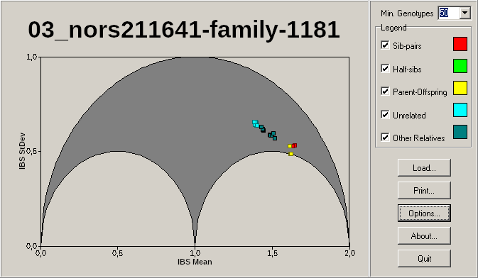
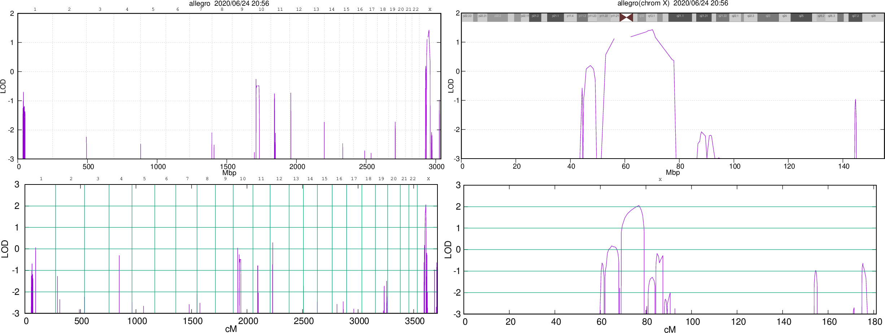
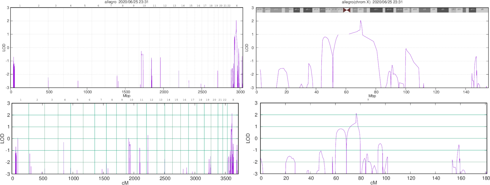

Linkage Analysis
Table of Contents
- Pre-processing
- Linkage Analysis (Attempts 1-3)
- Remove inconsistent X-linked Markers
- Linkage Analysis (Attempt 4)
- Linkage Analysis (Attempt 5)
- Thoughts so far
- Linkage Analysis (Attempt 6)
Here we try to perform linkage on three families: British, Canadian, and Spanish. The inheritance is X-recessive and so we expect a nicely defined linkage peak on the X chromosome.
Below are the steps that were performed. They are mostly notes, but I tried to expand them for clarity, and structure them to be more readable.
Pre-processing
This section deals with generating the input linkage files: Genotypes, MAF, MAP, and Pedigree
Genotyped Individuals
cd ~/work/linkage/raw_copy >/dev/null head -1 Spanish/genotypes Canadian/genotypes British/genotypes
Spanish/genotypes <== Name 2001 2002 2003 2004 2005 2006 2007 2008 2009 2010 2011 2012 2013 2014 2015 2016 2017 2018 2019 2020 2021 2022 2023 2024 2025 2026 2027 2028 2029 2030 2031 2032 2033 2034 2035 2036 2037 2038 2039 2040 2041 2042 2043 2044 2045 2046 2047 2048 2049 2050 2051 2052 2053 2054 2055 2056 2057 2058 2059 2060 Canadian/genotypes <== Name 2001 2002 2003 2004 2005 2006 2007 2008 2009 2010 2011 2012 2013 2014 2015 2016 2017 2018 2019 2020 2021 2022 2023 2024 2025 2026 2027 2028 2029 2030 2031 2032 2033 2034 2035 2036 2037 2038 2039 2040 2041 2042 2043 2044 2045 2046 2047 2048 2049 2050 2051 2052 2053 2054 2055 2056 2057 2058 2059 2060 British/genotypes <== Name 21 22 44 32 61 79 57 35 97
It looks like Canadian and Spanish have the same set of individuals. Are the genotype files the same?
Examining the Canadian and Spanish Genotypes
wc -l Canadian/genotypes Spanish/genotypes | head -2
| 298221 | Canadian/genotypes |
| 298007 | Spanish/genotypes |
Duplicate markers in any of the datasets?
cut -f1 Canadian/genotypes | sort | uniq -D cut -f1 Spanish/genotypes | sort | uniq -D
No duplicates.
Overlapping markers between the sets?
cut -f1 Canadian/genotypes Spanish/genotypes\
| sort | uniq -c | grep ' 2 '\
| awk '{print $2}' | grep -v "Name" > overlap.markers.canadaspain
wc -l overlap.markers.canadaspain
| 297712 | overlap.markers.canadaspain |
A lot of overlap (99%). If we filter both the Canadian and Spanish genotypes for just the overlapping markers, are the genotypes the same?
Do Genotypes match between Canadian and Spanish Datasets?
#!/usr/bin/env R
tableau <- function(name, ...) {
read.table(name, stringsAsFactors=F, row.names=1, ...)
}
tab.spanish <- tableau('~/work/linkage/raw_copy/Spanish/genotypes', header=T)
tab.canada <- tableau('~/work/linkage/raw_copy/Canadian/genotypes', header=T)
tab.overlap <- tableau('~/work/linkage/raw_copy/overlap.markers.canadaspain', header=F)
- Quick check for missing values
tab.overlap.markers <- rownames(tab.overlap) dim(tab.spanish) dim(tab.canada) # check for missing values c(sum(is.na(tab.spanish)), sum(is.na(tab.canada)), sum(is.na(tab.overlap.markers)))
[1] 298006 60 [1] 298220 60 [1] 0 0 0
No missing values, let's overlap the datasets
Check Overlap on Datasets
tab.spanish.filt <- tab.spanish[tab.overlap.markers,] tab.canada.filt <- tab.canada[tab.overlap.markers,] dim(tab.spanish.filt) dim(tab.canada.filt) c(sum(is.na(tab.spanish.filt)), sum(is.na(tab.canada.filt)))
[1] 297712 60 [1] 297712 60 [1] 0 0
Let's check each individual across datasets and see if they're equal.
sapply(colnames(tab.canada.filt), function(x){
all(tab.canada.filt[,x] == tab.spanish.filt[,x])
})
X2001 X2002 X2003 X2004 X2005 X2006 X2007 X2008 X2009 X2010 X2011 X2012 X2013 TRUE TRUE TRUE TRUE TRUE TRUE TRUE TRUE TRUE TRUE TRUE TRUE TRUE X2014 X2015 X2016 X2017 X2018 X2019 X2020 X2021 X2022 X2023 X2024 X2025 X2026 TRUE TRUE TRUE TRUE TRUE TRUE TRUE TRUE TRUE TRUE TRUE TRUE TRUE X2027 X2028 X2029 X2030 X2031 X2032 X2033 X2034 X2035 X2036 X2037 X2038 X2039 TRUE TRUE TRUE TRUE TRUE TRUE TRUE TRUE TRUE TRUE TRUE TRUE TRUE X2040 X2041 X2042 X2043 X2044 X2045 X2046 X2047 X2048 X2049 X2050 X2051 X2052 TRUE TRUE TRUE TRUE TRUE TRUE TRUE TRUE TRUE TRUE TRUE TRUE TRUE X2053 X2054 X2055 X2056 X2057 X2058 X2059 X2060 TRUE TRUE TRUE TRUE TRUE TRUE TRUE TRUE
So for our intersected Canadian and Spanish datasets, all individuals exist in both datasets and the genotypes are the same….
Okay, so let's look at the differences.
Check Differences on Datasets
names.spanish <- rownames(tab.spanish) # small names.canada <- rownames(tab.canada) # large names.spanish.diff <- names.spanish[!(names.spanish %in% tab.overlap.markers)] names.canada.diff <- names.canada[!(names.canada %in% tab.overlap.markers)] length(names.spanish.diff) length(names.canada.diff)
[1] 294 [1] 508
294 new markers in Spanish dataset, and 508 in Canadian dataset.
paste(sort(names.spanish.diff), collapse=" ") paste(sort(names.canada.diff), collapse=" ") #names.canada.diff[names.canada.diff %in% names.spanish.diff]
[1] "rs10035105 rs10076408 rs10120169 rs1022249 rs10225000 rs10268365 rs1029905 rs1033651 rs10405913 rs10424263 rs10435440 rs10445105 rs10493155 rs10512073 rs10736027 rs10797122 rs10805304 rs10812206 rs10860692 rs10869200 rs10930124 rs10989329 rs11074843 rs11532602 rs11632698 rs11634071 rs11637194 rs11647013 rs11734226 rs11735207 rs11743216 rs11790808 rs11819487 rs11845926 rs11849247 rs11897697 rs11904750 rs11971667 rs12001157 rs12005018 rs12006781 rs12037123 rs12059286 rs1221986 rs12227359 rs12346965 rs12417751 rs12420493 rs12422743 rs12437252 rs12470133 rs12476047 rs12502690 rs12515368 rs12644278 rs12682602 rs1275642 rs12793010 rs12820069 rs12887411 rs12931636 rs13118998 rs13147122 rs13225805 rs13259555 rs13264696 rs13267264 rs1329005 rs13314478 rs13428862 rs13431489 rs1355196 rs1372756 rs137856 rs1386628 rs1424712 rs1426654 rs1430916 rs1454075 rs1497956 rs1505518 rs1527941 rs1545254 rs1560001 rs1561245 rs1579450 rs1589390 rs160632 rs161330 rs1626593 rs1640007 rs16834698 rs16869058 rs16940213 rs16943302 rs16955641 rs16983070 rs17020449 rs17023989 rs17028962 rs17042329 rs17071817 rs17097599 rs17106727 rs17141671 rs17156078 rs17194591 rs17291521 rs17324762 rs17571029 rs17622920 rs1847458 rs1874848 rs1908970 rs1961712 rs1971518 rs2031077 rs2041876 rs2060241 rs2074685 rs2077305 rs2103186 rs2157739 rs2165183 rs2176804 rs2179932 rs2222723 rs2245007 rs2254835 rs2273440 rs2287807 rs2291977 rs2297604 rs2322847 rs2349057 rs2368540 rs2373901 rs2392243 rs2416012 rs2427285 rs2430408 rs2432055 rs2506814 rs2540834 rs2602647 rs2607272 rs2610166 rs2807873 rs2833135 rs28539549 rs2885857 rs3094315 rs3115876 rs3120834 rs3133916 rs35308549 rs35339599 rs3735453 rs3769439 rs3785138 rs3787062 rs3864814 rs387103 rs3934574 rs3935714 rs4043679 rs4111024 rs4236396 rs424970 rs431873 rs4380043 rs4391434 rs4458410 rs4515498 rs4574760 rs4634387 rs4641198 rs4653109 rs4658538 rs4665344 rs467095 rs468574 rs4694105 rs4698914 rs4711347 rs4768124 rs4768740 rs4786427 rs4822507 rs4918227 rs4954126 rs4980182 rs4986174 rs4987774 rs5028811 rs521896 rs561608 rs568291 rs5907429 rs5907446 rs5923089 rs5926166 rs5955721 rs5969198 rs5974208 rs5977376 rs5981162 rs5985414 rs6061052 rs6138938 rs613906 rs6438013 rs6563855 rs6584061 rs6590725 rs6606874 rs6629448 rs6641825 rs6731269 rs6747946 rs6750986 rs6767104 rs6772001 rs678483 rs6789667 rs6823473 rs6859120 rs6892802 rs6961503 rs6970785 rs698252 rs6997885 rs7003908 rs7023913 rs7034006 rs7046442 rs7051301 rs7065033 rs7103131 rs7118144 rs7140271 rs7142055 rs7145672 rs7155335 rs7171366 rs7175782 rs7205016 rs7210702 rs7256412 rs7294593 rs7299473 rs733327 rs7347681 rs7388704 rs739666 rs7420125 rs7448571 rs7539694 rs7558478 rs7598670 rs7623157 rs7634647 rs7635505 rs7652953 rs7709951 rs7830593 rs7830759 rs7852245 rs790446 rs7973073 rs7993403 rs7999250 rs8018580 rs8027309 rs8036260 rs8064924 rs8096605 rs828869 rs852523 rs914926 rs9294160 rs9300218 rs9305946 rs931885 rs9327877 rs946252 rs9513367 rs961324 rs9632500 rs9825114 rs9848965 rs9856624 rs988675 rs9952775" [1] "rs10002767 rs10067377 rs10069971 rs10081602 rs10092295 rs1011631 rs1012049 rs10134488 rs10260614 rs1026952 rs1028157 rs1028717 rs10417587 rs10418716 rs10455256 rs10459096 rs10463071 rs10471186 rs10485186 rs10498261 rs10505358 rs10509470 rs10510640 rs10735900 rs10743138 rs10745970 rs10747935 rs10751198 rs10773019 rs10773298 rs10783780 rs10827747 rs10837001 rs10871565 rs10876808 rs10880668 rs10889756 rs10919147 rs10923243 rs10934483 rs10954947 rs10955576 rs10955842 rs11019002 rs11036136 rs11036671 rs11039339 rs11066173 rs11103951 rs11111055 rs11127817 rs1115355 rs11183575 rs11183847 rs11207307 rs11208476 rs11208514 rs11209143 rs11578572 rs11579421 rs11586489 rs11611788 rs11617701 rs11639964 rs11642528 rs11647019 rs11649996 rs11666341 rs11668071 rs11693836 rs11714019 rs11717337 rs11735374 rs11736418 rs1176363 rs11769073 rs11774868 rs11805987 rs11812710 rs11826637 rs11847580 rs11868175 rs11893974 rs11929794 rs11949431 rs12035884 rs12070042 rs12074902 rs12082064 rs12121955 rs1218095 rs12307445 rs12409953 rs12420889 rs12444207 rs12448148 rs12472264 rs12478512 rs12501237 rs12513059 rs12563198 rs12569902 rs12577341 rs12594534 rs12597499 rs12605781 rs12621811 rs12630815 rs12636704 rs12641788 rs12667006 rs12682277 rs12800562 rs12899461 rs12950420 rs12960119 rs13014473 rs13112145 rs13112623 rs13123545 rs13169879 rs13171172 rs13181306 rs1318296 rs13216122 rs13252528 rs13325291 rs13379776 rs13408531 rs1341680 rs1371544 rs1380108 rs1388452 rs1389800 rs1395891 rs1432327 rs1434545 rs1439535 rs1470465 rs1479397 rs1493088 rs150294 rs1505219 rs1509083 rs1509537 rs1522132 rs1564241 rs1566557 rs159228 rs1628854 rs1634479 rs1674729 rs16822696 rs16838078 rs16838677 rs16839483 rs16845000 rs16885247 rs16892685 rs16892729 rs16902328 rs16907106 rs16914850 rs16918895 rs1693663 rs16950116 rs16963394 rs16964618 rs16970687 rs16994051 rs16995641 rs17009882 rs17018414 rs17021145 rs17021825 rs17025482 rs17027938 rs17030742 rs17042107 rs17047489 rs17059403 rs17078877 rs17091704 rs17099872 rs17109726 rs17113072 rs17135626 rs17157802 rs17169630 rs17184090 rs17213264 rs17238052 rs1730633 rs1734907 rs17365336 rs1736867 rs17392154 rs17393434 rs17424278 rs17619600 rs17631231 rs17664384 rs17677886 rs17678153 rs17701996 rs17716105 rs17779253 rs17837692 rs1791909 rs1792525 rs1796937 rs1798911 rs1804025 rs1823762 rs1835655 rs1847022 rs185123 rs1874565 rs1890547 rs1922551 rs195077 rs1960715 rs1997909 rs2041644 rs2061873 rs2113316 rs2131887 rs2164161 rs2174391 rs2213842 rs2242496 rs2252814 rs2276684 rs2284759 rs2287929 rs2298261 rs229835 rs2300179 rs2302332 rs2304136 rs232253 rs2354863 rs2356746 rs2369089 rs238495 rs2395983 rs2399009 rs2400194 rs2415755 rs242724 rs2437802 rs2448191 rs246690 rs2489715 rs249660 rs2515062 rs2570095 rs2575632 rs2591933 rs2596914 rs2618063 rs2627813 rs263734 rs2706464 rs2727165 rs274559 rs277061 rs2786229 rs2809935 rs2816632 rs282258 rs2831208 rs28579689 rs2867048 rs2892383 rs2896850 rs2898407 rs3016176 rs3016752 rs3094395 rs3184504 rs3213928 rs340157 rs34121035 rs34457142 rs344931 rs34585198 rs354518 rs35594730 rs35612996 rs359980 rs3767026 rs3792074 rs3794392 rs3798939 rs3799458 rs3805463 rs3806218 rs3807147 rs3811417 rs3905886 rs3922732 rs3936219 rs4030594 rs4072680 rs4077312 rs4083173 rs4129945 rs4131991 rs4256444 rs4256466 rs4269090 rs429102 rs4317218 rs4332109 rs4405980 rs4414954 rs4419750 rs4422405 rs4466024 rs4470566 rs4479556 rs4523152 rs4529911 rs4603754 rs4618543 rs4638625 rs4642852 rs4647731 rs4648793 rs4655383 rs4656588 rs4675174 rs4678030 rs4678192 rs4688813 rs4699665 rs4699891 rs4735337 rs4740125 rs4756580 rs4760810 rs4780334 rs4792886 rs4834711 rs4860078 rs4862073 rs4862528 rs4865187 rs4892127 rs4932304 rs4946788 rs4951329 rs4962257 rs4965799 rs4974961 rs4975154 rs4980833 rs499974 rs514438 rs530590 rs532731 rs536116 rs548598 rs559665 rs571898 rs5945193 rs5973884 rs604045 rs6424572 rs6446166 rs6449873 rs6485440 rs650440 rs651159 rs6511828 rs6554743 rs6571305 rs6660036 rs6661853 rs6677107 rs6680773 rs6694935 rs6695540 rs6695853 rs670821 rs6738488 rs6739779 rs6750206 rs6765009 rs6788853 rs6793416 rs6824666 rs6846198 rs6860871 rs687578 rs6908310 rs6910046 rs6982764 rs6987055 rs6989728 rs7003452 rs7009774 rs7010796 rs7054689 rs7063059 rs7102109 rs7109235 rs7113382 rs7113554 rs711540 rs7132012 rs7133142 rs7197245 rs7212298 rs722024 rs7226224 rs7254953 rs7300655 rs7312593 rs7315397 rs7320806 rs739742 rs7440269 rs744908 rs7471812 rs747451 rs749981 rs7517754 rs7522356 rs7523055 rs7524430 rs7529073 rs753891 rs7540474 rs7543834 rs7560409 rs7579936 rs7621543 rs7649308 rs7651707 rs7686452 rs7694663 rs7696759 rs7717089 rs7729195 rs7734004 rs7735633 rs7736417 rs7746031 rs7764524 rs777016 rs7771567 rs777827 rs779562 rs7820168 rs7862217 rs7882367 rs7909723 rs7934904 rs7936750 rs7952758 rs7953290 rs7964120 rs7980012 rs7984685 rs8027320 rs803223 rs8035089 rs8035342 rs8057892 rs8079695 rs815802 rs816353 rs823036 rs838425 rs850517 rs867316 rs869026 rs920980 rs9303255 rs9305018 rs9319336 rs9327706 rs934397 rs9354993 rs936525 rs9375604 rs9384847 rs943551 rs9459893 rs9494412 rs9529418 rs9579762 rs9637625 rs966867 rs968845 rs970694 rs9733640 rs9812103 rs9828770 rs9833058 rs9836404 rs9844222 rs9861780 rs989925 rs9941008 rs9999251"
Summary
The Canadian and Spanish genotypes are 99% the same, and for the overlap that exists between their markers they are completely identical. So… why do these two datasets, which describe the same set of individuals, have 300 extra markers in the Spanish and 500 in the Canadian?
I spoke with Mallory , and she said that the overlap was indeed strange but that's how the files were given to her. I very well may have been the last person to touch this project, so it could have been something I may have done previously, a previous merging of these datasets…
On the other hand, it could be that these families were genotyped together twice, in which case the fact that the genotypes for the overlapping markers have perfect matches, this adds a large amount of credibility to these genotypes (although the NC calls being consistent would be strange, unless the DNA in those regions were genuinely hard to genotype).
Merging the genotypes file
# we've loaded the Spanish and Canadian genotypes already
tab.british <- tableau('~/work/linkage/raw_copy/British/genotypes', header=T)
markers.british <- rownames(tab.british) markers.spanish <- rownames(tab.spanish) markers.canadian <- rownames(tab.canada) length(markers.british) length(markers.spanish) length(markers.canadian)
[1] 712726 [1] 298006 [1] 298220
The british have the most markers, followed by canadian, and then spanish. So that will be the (reverse) order used to subselect one from the other.
intersect.do <- function(big,med,sml) {
medNbig <- med[med %in% big]
smlNmed <- sml[sml %in% med]
bigNmedNsml <- smlNmed[smlNmed %in% medNbig]
return(sort(bigNmedNsml))
}
# intersect in different ways, should be the same, but good to check
inters = c()
inters[[1]] <- intersect.do(markers.british, markers.canadian, markers.spanish)
inters[[2]] <- intersect.do(markers.british, markers.spanish, markers.canadian)
inters[[3]] <- intersect.do(markers.canadian, markers.british, markers.spanish)
inters[[4]] <- intersect.do(markers.canadian, markers.spanish, markers.british)
inters[[5]] <- intersect.do(markers.spanish, markers.british, markers.canadian)
inters[[6]] <- intersect.do(markers.spanish, markers.canadian, markers.british)
# All the same length?
sapply(inters, length)
# All the same markers?
all(inters[[1]] == inters[[2]])
all(inters[[3]] == inters[[4]])
all(inters[[5]] == inters[[6]])
all(inters[[1]] == inters[[4]])
all(inters[[1]] == inters[[6]])
[1] 214563 214563 214563 214563 214563 214563 [1] TRUE [1] TRUE [1] TRUE [1] TRUE [1] TRUE
Yep, all the same (when sorted). We'll pick one and use that on all three datasets and then merge them.
common <- inters[[1]] ## Filter rows mat.canada <- tab.canada[common,] mat.british <- tab.british[common,] mat.spanish <- tab.spanish[common,] ## Merge mat.merged <- data.frame(mat.canada, mat.british, mat.spanish, check.names=T, check.rows=T) dim(mat.merged) sort(colnames(mat.merged))
[1] 214563 129 [1] "X2001" "X2001.1" "X2002" "X2002.1" "X2003" "X2003.1" "X2004" [8] "X2004.1" "X2005" "X2005.1" "X2006" "X2006.1" "X2007" "X2007.1" [15] "X2008" "X2008.1" "X2009" "X2009.1" "X2010" "X2010.1" "X2011" [22] "X2011.1" "X2012" "X2012.1" "X2013" "X2013.1" "X2014" "X2014.1" [29] "X2015" "X2015.1" "X2016" "X2016.1" "X2017" "X2017.1" "X2018" [36] "X2018.1" "X2019" "X2019.1" "X2020" "X2020.1" "X2021" "X2021.1" [43] "X2022" "X2022.1" "X2023" "X2023.1" "X2024" "X2024.1" "X2025" [50] "X2025.1" "X2026" "X2026.1" "X2027" "X2027.1" "X2028" "X2028.1" [57] "X2029" "X2029.1" "X2030" "X2030.1" "X2031" "X2031.1" "X2032" [64] "X2032.1" "X2033" "X2033.1" "X2034" "X2034.1" "X2035" "X2035.1" [71] "X2036" "X2036.1" "X2037" "X2037.1" "X2038" "X2038.1" "X2039" [78] "X2039.1" "X2040" "X2040.1" "X2041" "X2041.1" "X2042" "X2042.1" [85] "X2043" "X2043.1" "X2044" "X2044.1" "X2045" "X2045.1" "X2046" [92] "X2046.1" "X2047" "X2047.1" "X2048" "X2048.1" "X2049" "X2049.1" [99] "X2050" "X2050.1" "X2051" "X2051.1" "X2052" "X2052.1" "X2053" [106] "X2053.1" "X2054" "X2054.1" "X2055" "X2055.1" "X2056" "X2056.1" [113] "X2057" "X2057.1" "X2058" "X2058.1" "X2059" "X2059.1" "X2060" [120] "X2060.1" "X21" "X22" "X32" "X35" "X44" "X57" [127] "X61" "X79" "X97"
So we have 129 genotypes, of which some are duplicates (from the Canadian and Spanish) genotypes file. We should check that the ".1" name have identical genotypes and then remove them. (Yes we already know they're identical from before, but better safer than sorry).
names.merged <- colnames(mat.merged)
names.dupes.bool <- sapply(names.merged, function(x){endsWith(x,".1")})
names.dupes <- names.merged[names.dupes.bool]
sapply(names.dupes, function(dupers){
namers <- strsplit(dupers, split="\\.1")[[1]]
##
vec.dupes <- mat.merged[,dupers]
vec.names <- mat.merged[,namers]
##
return(all(vec.dupes == vec.names))
})
X2001.1 X2002.1 X2003.1 X2004.1 X2005.1 X2006.1 X2007.1 X2008.1 X2009.1 X2010.1 TRUE TRUE TRUE TRUE TRUE TRUE TRUE TRUE TRUE TRUE X2011.1 X2012.1 X2013.1 X2014.1 X2015.1 X2016.1 X2017.1 X2018.1 X2019.1 X2020.1 TRUE TRUE TRUE TRUE TRUE TRUE TRUE TRUE TRUE TRUE X2021.1 X2022.1 X2023.1 X2024.1 X2025.1 X2026.1 X2027.1 X2028.1 X2029.1 X2030.1 TRUE TRUE TRUE TRUE TRUE TRUE TRUE TRUE TRUE TRUE X2031.1 X2032.1 X2033.1 X2034.1 X2035.1 X2036.1 X2037.1 X2038.1 X2039.1 X2040.1 TRUE TRUE TRUE TRUE TRUE TRUE TRUE TRUE TRUE TRUE X2041.1 X2042.1 X2043.1 X2044.1 X2045.1 X2046.1 X2047.1 X2048.1 X2049.1 X2050.1 TRUE TRUE TRUE TRUE TRUE TRUE TRUE TRUE TRUE TRUE X2051.1 X2052.1 X2053.1 X2054.1 X2055.1 X2056.1 X2057.1 X2058.1 X2059.1 X2060.1 TRUE TRUE TRUE TRUE TRUE TRUE TRUE TRUE TRUE TRUE
Yep, identical genotypes for all duplicate individuals – let's remove them.
mat.merged.nodupes <- mat.merged[,!names.dupes.bool] dim(mat.merged.nodupes) colnames(mat.merged.nodupes)
[1] 214563 69 [1] "X2001" "X2002" "X2003" "X2004" "X2005" "X2006" "X2007" "X2008" "X2009" [10] "X2010" "X2011" "X2012" "X2013" "X2014" "X2015" "X2016" "X2017" "X2018" [19] "X2019" "X2020" "X2021" "X2022" "X2023" "X2024" "X2025" "X2026" "X2027" [28] "X2028" "X2029" "X2030" "X2031" "X2032" "X2033" "X2034" "X2035" "X2036" [37] "X2037" "X2038" "X2039" "X2040" "X2041" "X2042" "X2043" "X2044" "X2045" [46] "X2046" "X2047" "X2048" "X2049" "X2050" "X2051" "X2052" "X2053" "X2054" [55] "X2055" "X2056" "X2057" "X2058" "X2059" "X2060" "X21" "X22" "X44" [64] "X32" "X61" "X79" "X57" "X35" "X97"
Okay, we have a fully merged matrix. Let's write it out
mkdir -p ~/work/linkage/preprocessed
# Write genotypes
write.table(mat.merged.nodupes, file="~/work/linkage/preprocessed/genotypes",
quote=F, sep="\t", col.names = NA)
MAF
The minor allele frequency file should also be written from the set of markers we have. We will assume all markers have a MAF of 0.5
cnames <- rownames(mat.merged.nodupes) maf <- data.frame(Name=cnames, Freq=rep(0.5,length(cnames))) write.table(maf, file="~/work/linkage/preprocessed/maf.txt", quote=F, sep="\t", row.names=F)
Pedigree
I will rely on the pedfiles given to me, since I have no way of verifying the pedigrees myself. The family names will be prefixed with '118' and suffixed with '1' '2' or '3' depending for Canadian, Spanish, and British.
Canadian
1183 76211 0 0 1 1 1183 2037 0 0 2 1 1183 2033 76211 2037 1 1 1183 76222 0 0 2 1 1183 2036 2033 76222 1 1 1183 2035 2033 76222 1 1 1183 2034 76211 2037 1 2 1183 2032 76211 2037 2 1 1183 76213 0 0 1 1 1183 2026 76213 2032 1 1 1183 2030 76211 2037 2 1 1183 76215 0 0 1 1 1183 2028 76215 2030 2 1 1183 2027 76215 2030 1 1 1183 2029 0 0 1 1 1183 2031 76211 2037 2 1 1183 2024 2029 2031 2 1 1183 2025 2029 2031 1 2
Spanish
1182 76111 0 0 1 1 1182 76112 0 0 2 1 1182 76121 0 0 1 1 1182 2021 76111 76112 2 1 1182 2022 76111 76112 1 2 1182 2020 76121 2021 1 2 1182 76123 0 0 1 1 1182 2023 76123 2021 1 2
British
1181 7623 0 0 1 1 1181 7624 0 0 2 1 1181 32 7623 7624 2 1 1181 22 7623 7624 2 1 1181 20 0 0 1 1 1181 44 0 0 1 1 1181 79 20 32 1 2 1181 61 20 32 1 2 1181 35 44 22 2 1 1181 57 0 0 1 1 1181 97 57 35 1 2
Consistency check
Let's export the three tables into the same file and see if there any repeat individuals, and that the parents match. Lisp is good for this.
(let ((mapped-file nil))
(with-current-buffer "pedfile.pro"
(goto-char (point-min))
;; Parse file
(while (not (eobp))
(let* ((lvals (--map (string-to-number it)
(split-string
(buffer-substring-no-properties
(point)
(progn (forward-line 1) (point)))
"[ ]" nil "[ \n]")))
(entry (list (cadr lvals) ;; id -- alist
:family (car lvals)
:father (nth 2 lvals) :mother (nth 3 lvals)
:gender (cond ((eq (nth 4 lvals) 0) 'unknown)
((eq (nth 4 lvals) 1) 'male)
((eq (nth 4 lvals) 2) 'female)
(t (user-error "Gender error")))
:affect (cond ((eq (nth 5 lvals) 0) 'unknown)
((eq (nth 5 lvals) 1) 'yes)
((eq (nth 5 lvals) 2) 'no)
(t (user-error "affected error"))))))
(push entry mapped-file))))
;; check duplicate ids
(let* ((ids (mapcar 'identity mapped-file))
(lenids (length ids))
(uniqids (-uniq ids))
(lenuniq (length uniqids)))
(unless (eq lenids lenuniq)
(user-error "Id's in pedfile are not unique: %s"
(-difference ids uniqids))))
;; Check gender and parentage
(cl-labels ((checkparent (idp relation)
(let* ((id-data (alist-get idp mapped-file))
(gender (plist-get id-data :gender)))
(if (eq 0 idp)
(format "no %s as expected." relation)
(unless id-data
(user-error "%id: %d (%s) does not exist "
id idp relation))
(cond ((and (eq relation 'mother)
(not (eq gender 'female)))
(user-error "%d: %d (%s) is not female, but %s"
id idp relation gender))
((and (eq relation 'father)
(not (eq gender 'male)))
(user-error "%d: %d (%s) is not male, but %s"
id idp relation gender))
(t (format "%d (%s,%s) clear"
idp relation gender)))))))
;; recursion would be expensive, simple loop would suffice
(let ((res nil))
(dolist (entry mapped-file (message (mapconcat 'identity res "\n")))
(let ((id (car entry))
(mother (plist-get (cdr entry) :mother))
(father (plist-get (cdr entry) :father)))
(push (format "%d\t%s\t%s" id
(checkparent mother 'mother)
(checkparent father 'father))
res))))))
76211 no mother as expected. no father as expected. 2037 no mother as expected. no father as expected. 2033 2037 (mother,female) clear 76211 (father,male) clear 76222 no mother as expected. no father as expected. 2036 76222 (mother,female) clear 2033 (father,male) clear 2035 76222 (mother,female) clear 2033 (father,male) clear 2034 2037 (mother,female) clear 76211 (father,male) clear 2032 2037 (mother,female) clear 76211 (father,male) clear 76213 no mother as expected. no father as expected. 2026 2032 (mother,female) clear 76213 (father,male) clear 2030 2037 (mother,female) clear 76211 (father,male) clear 76215 no mother as expected. no father as expected. 2028 2030 (mother,female) clear 76215 (father,male) clear 2027 2030 (mother,female) clear 76215 (father,male) clear 2029 no mother as expected. no father as expected. 2031 2037 (mother,female) clear 76211 (father,male) clear 2024 2031 (mother,female) clear 2029 (father,male) clear 2025 2031 (mother,female) clear 2029 (father,male) clear 76111 no mother as expected. no father as expected. 76112 no mother as expected. no father as expected. 76121 no mother as expected. no father as expected. 2021 76112 (mother,female) clear 76111 (father,male) clear 2022 76112 (mother,female) clear 76111 (father,male) clear 2020 2021 (mother,female) clear 76121 (father,male) clear 76123 no mother as expected. no father as expected. 2023 2021 (mother,female) clear 76123 (father,male) clear 7623 no mother as expected. no father as expected. 7624 no mother as expected. no father as expected. 32 7624 (mother,female) clear 7623 (father,male) clear 22 7624 (mother,female) clear 7623 (father,male) clear 20 no mother as expected. no father as expected. 44 no mother as expected. no father as expected. 79 32 (mother,female) clear 20 (father,male) clear 61 32 (mother,female) clear 20 (father,male) clear 35 22 (mother,female) clear 44 (father,male) clear 57 no mother as expected. no father as expected. 97 35 (mother,female) clear 57 (father,male) clear
Okay, pedigree appears to have no duplicates, and all parents appear to exist and have the right genders.
Map file
- Canada & Spain
- Infinium Multi Ethnic Global BeadChip (1779819 markers)
- England
- Omni-X-24 BeadChip (741000 markers)
Interesting, Canada and Spain actually had the smaller number of markers than the British and yet they came from a larger chip.
Anyway, we will need to download the map files for each chip, check the marker overlap and check that marker physical positions make sense. Otherwise we'll need to pick a side.
Infinium Multi Ethnic Global Beadchip
The closest match only offers a PDF for the Beadchip, but no specific map files. I would guess that "Infinium Multi Ethnic Global Beadchip" is part of the "Infinium Multi Ethnic Global" Kit, so that is what I went with. The file chosen was "Infinium Multi-Ethnic Global-8 v1.0 Physical and Genetic Coordinates" but two builds were offered: hg19 and hg38.
The linkage plotting tools only have chromosome map for hg18 and hg19, so I opted to download the hg19 for compatibility.
wget https://support.illumina.com/content/dam/illumina-support/documents/downloads/productfiles/multiethnic-global/multi-ethnic-global-8-d1-physical-and-genetic-coordinates.zip -O ~/work/linkage/map/multi-ethnic-global-8-d1-physical-genetic-coordinates.zip cd ~/work/linkage/map/ unzip multi-ethnic-global-8-d1-physical-genetic-coordinates.zip ls
| InfiniumOmniExpress-24v1-3A1.csvPhysical-and-Genetic-Coordinates.txt | ||
| infinium-omniexpress-24-v1-3-a1-physical-genetic-coordinates.zip | ||
| multi-ethnic-global-8-d1-physical-genetic-coordinates.zip | ||
| Multi-EthnicGlobalD1.csvPhysical-and-Genetic-Coordinates.txt | ||
| ps.png |
A quick peek:
head -1 $name cat $name | grep "^rs" | head | cut -f 1-10
| Name | Chr | MapInfo | deCODE(cM) |
| rs10000008 | 4 | 172776204 | 166.8903 |
| rs10000011 | 4 | 138223055 | 133.7645 |
| rs10000030 | 4 | 103374154 | 107.4204 |
| rs1000003 | 3 | 98342907 | 111.7517 |
| rs10000056 | 4 | 189321617 | 203.1508 |
| rs1000007 | 2 | 237752054 | 249.0087 |
| rs10000073 | 4 | 43022222 | 63.9959 |
| rs10000092 | 4 | 21895517 | 37.309 |
| rs1000014 | 16 | 24417536 | 47.977 |
| rs1000016 | 2 | 235690982 | 244.3528 |
A quick check on UCSC for:
- hg38:
- hg37:
So I am reasonably confident this map file is hg19/hg37
Omni-X-24 BeadChip
The closest match was the OmniExpress-24, and the file chosen was the "Infinium OmniExpress-24 v1.3 Physical and Genetic Coordinates" but no genome was given.
wget https://support.illumina.com/content/dam/illumina-support/documents/downloads/productfiles/humanomniexpress-24/v1-3/infinium-omniexpress-24-v1-3-a1-physical-genetic-coordinates.zip -O ~/work/linkage/map/infinium-omniexpress-24-v1-3-a1-physical-genetic-coordinates.zip cd ~/work/linkage/map/ unzip infinium-omniexpress-24-v1-3-a1-physical-genetic-coordinates.zip ls
| InfiniumOmniExpress-24v1-3A1.csvPhysical-and-Genetic-Coordinates.txt | multi-ethnic-global-8-d1-physical-genetic-coordinates.zip |
| infinium-omniexpress-24-v1-3-a1-physical-genetic-coordinates.zip | Multi-EthnicGlobalD1.csvPhysical-and-Genetic-Coordinates.txt |
| Name | Chr | MapInfo | deCODE(cM) |
| rs10000911 | 4 | 144136193 | 140.08 |
| rs10000988 | 4 | 76010255 | 85.247 |
| rs10002181 | 4 | 142250415 | 138.919 |
| rs10003721 | 4 | 74440784 | 83.5039 |
| rs10005140 | 4 | 22365603 | 37.6755 |
| rs10005242 | 4 | 5949558 | 10.9662 |
| rs10010434 | 4 | 2701540 | 3.5678 |
| rs10011256 | 4 | 110792907 | 113.594 |
| rs1001131 | 2 | 115010406 | 126.4217 |
| rs10011926 | 4 | 111026927 | 113.8203 |
A quick check on UCSC for:
- hg38:
- hg37:
So I am reasonably confident this map file is hg19.
Combining Maps
We currently have two hg19 marker maps and we want to merge them on common marker names and positions. R is better suited for this:
tableau <- function(name, ...) {
read.table(name, stringsAsFactors=F, row.names=1, ...)
}
map.omnix <- tableau('~/work/linkage/map/InfiniumOmniExpress-24v1-3_A1.csv_Physical-and-Genetic-Coordinates.txt', header=T)
map.global <- tableau('~/work/linkage/map/Multi-EthnicGlobal_D1.csv_Physical-and-Genetic-Coordinates.txt', header=T)
common.markers <- rownames(tableau('~/work/linkage/preprocessed/maf.txt', header=T))
Peek at each file:
dim(map.omnix) dim(map.global) length(common.markers) ## peek head(map.omnix) head(map.global) head(common.markers)
[1] 714238 3
[1] 1748250 3
[1] 214563
Chr MapInfo deCODE.cM.
rs10000911 4 144136193 140.0800
rs10000988 4 76010255 85.2470
rs10002181 4 142250415 138.9190
rs10003721 4 74440784 83.5039
rs10005140 4 22365603 37.6755
rs10005242 4 5949558 10.9662
Chr MapInfo deCODE.cM.
10:100012219-GT 10 100012219 118.9888
10:100013340-CT 10 100013340 118.9910
10:100013459-TCTC-T 10 100013459 118.9912
10:100013467-GA 10 100013467 118.9912
10:100015474-GA 10 100015474 118.9951
10:100016685-CT 10 100016685 118.9974
[1] "rs1000002" "rs1000003" "rs10000030" "rs10000037" "rs10000041"
[6] "rs1000007"
700k markers in the omnix, and 1.7M markers in the global, with 200k markers from our genotypes.
The common.markers were derived from the markers given in the maf.txt file (which was derived from our combined genotypes file). We will now subselect these markers from each map before intersecting.
map.omnix.sub <- map.omnix[rownames(map.omnix) %in% common.markers,] map.global.sub <- map.global[rownames(map.global) %in% common.markers,] dim(map.omnix.sub) dim(map.global.sub)
[1] 211729 3 [1] 117708 3
700k to 200k in the omnix, and 1.7M to 117k in the global. Let's intersect.
Intersection
First, we subselect the global from the omnix
map.intersect1 <- map.global.sub[rownames(map.global.sub) %in% rownames(map.omnix.sub),] dim(map.intersect1) head(map.intersect1)
[1] 116641 3
Chr MapInfo deCODE.cM.
rs10000030 4 103374154 107.4204
rs1000003 3 98342907 111.7517
rs1000007 2 237752054 249.0087
rs1000016 2 235690982 244.3528
rs10000180 4 83899764 90.5530
rs10000272 4 189690383 204.0179
and now we subselect the omnix from the global. (The purpose of this is to see if we get the same map, and to see if the physical and cM positions agree across maps for the same markers).
map.intersect2 <- map.omnix.sub[rownames(map.omnix.sub) %in% rownames(map.global.sub),] dim(map.intersect2) head(map.intersect2)
[1] 116641 3
Chr MapInfo deCODE.cM.
rs1001131 2 115010406 126.4217
rs10068316 5 5938780 15.9405
rs10466408 11 12839527 21.8288
rs10485597 20 20239050 49.4944
rs10488810 11 35213378 51.6996
rs10788162 10 123037309 145.1604
Same number of markers as before, but I guess the order of markers is different. Let's do a quick sort of both
Consistency check (small)
head(map.intersect1[order(rownames(map.intersect1)),]) head(map.intersect2[order(rownames(map.intersect2)),])
Chr MapInfo deCODE.cM.
rs1000003 3 98342907 111.7517
rs10000030 4 103374154 107.4204
rs1000007 2 237752054 249.0087
rs1000016 2 235690982 244.3528
rs10000180 4 83899764 90.5530
rs10000272 4 189690383 204.0179
Chr MapInfo deCODE.cM.
rs1000003 3 98342907 111.7517
rs10000030 4 103374154 107.4204
rs1000007 2 237752054 249.0087
rs1000016 2 235690982 244.3528
rs10000180 4 83899764 90.5530
rs10000272 4 189690383 204.0179
Sorting by marker name gives the same top 10 markers in each file with identical physical and genetic positions. Let's check all markers.
all(sort(rownames(map.intersect1)) == sort(rownames(map.intersect2))) length(rownames(map.intersect1))
[1] TRUE [1] 116641
And now all positions
Consistency check (all)
(Note: this was slow, so I wrote a parallel implementation based on this post, which gave a 3x speedup)
library(parallel)
## An mc-version of the sapply function.
mcsapply <- function (X, FUN, ..., simplify = TRUE, USE.NAMES = TRUE) {
FUN <- match.fun(FUN)
answer <- parallel::mclapply(X = X, FUN = FUN, ...)
if (USE.NAMES && is.character(X) && is.null(names(answer)))
names(answer) <- X
if (!isFALSE(simplify) && length(answer))
simplify2array(answer, higher = (simplify == "array"))
else answer
}
comm.markers <- rownames(map.intersect1) ## common to both datasets
comm.len <- length(comm.markers)
i <- 0
res <- mcsapply(comm.markers, function(marker){
rowdata.i1 <- map.intersect1[marker,]
rowdata.i2 <- map.intersect2[marker,]
i <<- i + 1
message(marker, " ", floor(100 * i / comm.len), " \r", appendLF=F)
flush.console()
return(all(rowdata.i1 == rowdata.i2))
}, mc.cores=3)
summary(res)
Mode FALSE TRUE NA's logical 1 116170 470
So it looks like 116170 markers were in complete agreement with one another. 470 were not sure (or could not do the comparison) and 1 was flat out wrong.
Let us look at these outliers and see whether the issue was to do with precision (e.g. 15.1416 vs 15.14159) or something more concerning.
Examining Outliers
- False Markers
Let's examine the one False marker
names(res)[res == FALSE & !(is.na(res))] # need to be explicit
rs2247450
and now a peek at this marker in both datasets:
rbind(c(name, "intersect1", map.intersect1[name,]), c(name, "intersect2", map.intersect2[name,]), c(name, "omnix", map.omnix[name,]), c(name, "global", map.global[name,]))rs2247450 intersect1 5 79381796 95.3136 rs2247450 intersect2 0 0 NA rs2247450 omnix 0 0 NA rs2247450 global 5 79381796 95.3136 It looks like this marker does not appear to be defined in the omnix dataset. We will drop it
- NA Markers
Let's look at 10 of the 470 undefined markers
na.markers <- names(res)[is.na(res)] head(na.markers)
rs10436791 rs10436793 rs10465457 rs10465458 rs10465469 rs1050190 rs10436791 intersect1 Y 14518606 NA rs10436791 intersect2 Y 14518606 NA rs10436791 omnix Y 14518606 NA rs10436791 global Y 14518606 NA rs1050190 intersect1 0 0 NA rs1050190 intersect2 0 0 NA rs1050190 omnix 0 0 NA rs1050190 global 0 0 NA Just from comparing the top and bottom marker in that list of 10 we can see that the cM information is NA.
This makes sense because for the top marker it is on the Y chromosome for which there is 0 recombination probability (or at least a not yet well-understood probability of a recombination event).
For the bottom marker, these have a chromosome of 0…, which I have no idea what that means, but that is also how they are written in the original map files.
- Summarize Outliers by Chromosome
Let's summarize the chromosomes of these outliers and see if they are on weird chromosomes. If they are then we can just drop them.
markers.outliers <- names(res)[is.na(res) | res==FALSE] source.outliers <- rbind(map.global[markers.outliers,], map.omnix[markers.outliers,]) head(source.outliers)5 79381796 95.3136 Y 14518606 nil Y 14266799 nil Y 17913958 nil Y 19306942 nil Y 7796708 nil source.chroms <- source.outliers$Chr table(source.chroms)
0 15 5 1 XY 12 Y 914 Most of these undefined markers are on the Y, a few on the '0', a few on the XY overlap, and 1 marker on chr5 (as explored previously).
Not very useful markers, I will drop these from the map.
- Removing outliers
map.nooutliers <- map.intersect1[!(rownames(map.intersect1) %in% markers.outliers),] dim(map.nooutliers)
116170 3 and a quick check for NA values:
table(is.na(map.nooutliers))
FALSE 348510 Good, this is a clean table.
Sort the map
Order the map by chromosome and then physical position
## List of chromosomes sort(unique(map.nooutliers$Chr))
[1] "1" "10" "11" "12" "13" "14" "15" "16" "17" "18" "19" "2" "20" "21" "22" [16] "3" "4" "5" "6" "7" "8" "9" "X"
Sorting numeric first, then alphanumeric is something I don't wish to implement. I will just manually specify chromosomes to speed up processing.
tab.only.numeric <- map.nooutliers[map.nooutliers$Chr != "X",]
tab.only.X <- map.nooutliers[map.nooutliers$Chr == "X",]
## sort the X by physpos only
tab.only.X.sorted <- tab.only.X[order(tab.only.X$MapInfo),]
## Convert the chrom to numeric
tab.only.numeric$Chr <- as.integer(tab.only.numeric$Chr)
tab.only.numeric.sorted <- tab.only.numeric[order(tab.only.numeric$Chr,
tab.only.numeric$MapInfo),]
## sort the numeric by chrom then physpos
tab.only.numeric.sorted <- tab.only.numeric[order(tab.only.numeric$Chr,
tab.only.numeric$MapInfo),]
## bind the tables together
ordered.map <- rbind(tab.only.numeric.sorted, tab.only.X.sorted)
head(ordered.map, 3)
tail(ordered.map, 3)
unique(ordered.map$Chr)
Chr MapInfo deCODE.cM.
rs4475691 1 846808 0
rs9777703 1 928836 0
rs3128117 1 944564 0
Chr MapInfo deCODE.cM.
rs11156600 X 154440161 189.3531
rs547447 X 154479421 189.4259
rs12557310 X 154735698 189.9009
[1] "1" "2" "3" "4" "5" "6" "7" "8" "9" "10" "11" "12" "13" "14" "15"
[16] "16" "17" "18" "19" "20" "21" "22" "X"
and now we format the output
Write the output
We need to convert this now into the usual weird linkage map format: chromosome, marker, cM, physical, marker, "x" (who invented this format?)
01 rs28625089 0.83019 830190 rs28625089 x
Quick print out
cat(sprintf("%s\t%s\t%.6f\t%d\t%s\tx", "Chr", "Name", 0, 0, "Name"),
file="~/work/linkage/map/map.all.txt", append=F, fill=T)
res <- lapply(1:nrow(ordered.map), function(index){
row <- ordered.map[index,]
marker <- rownames(row)
chrom <- row$Chr
chromD <- as.integer(row$Chr)
phys <- row$MapInfo
centim <- row$deCODE.cM.
if (is.na(chromD)){ ## is not 1-22
fstring <- "%s\t%s\t%.6f\t%d\t%s\tx"
} else {
fstring <- "%02d\t%s\t%.6f\t%d\t%s\tx"
chrom <- chromD
}
cat(sprintf(fstring, chrom, marker, centim, phys, marker),
file="~/work/linkage/map/map.all.txt",
append = T, fill = T)
return(0)
})
print("done.") ## otherwise we get a vector of 0000s
done.
Quick peek
head ~/work/linkage/map/map.all.txt
| Chr | Name | 0.0 | 0 | Name | x |
| 1 | rs4475691 | 0.0 | 846808 | rs4475691 | x |
| 1 | rs9777703 | 0.0 | 928836 | rs9777703 | x |
| 1 | rs3128117 | 0.0 | 944564 | rs3128117 | x |
| 1 | rs7526076 | 0.0 | 998395 | rs7526076 | x |
| 1 | rs9442372 | 0.0 | 1018704 | rs9442372 | x |
| 1 | rs6687776 | 0.0 | 1030565 | rs6687776 | x |
| 1 | rs6671356 | 0.0 | 1040026 | rs6671356 | x |
| 1 | rs12092254 | 0.0 | 1113121 | rs12092254 | x |
| 1 | rs3813204 | 0.0 | 1121014 | rs3813204 | x |
Check that the cM are in order
We sorted by physical position, and though there is normally an easy correspondence between physical and genetic position – there might be the odd cM position that is smaller than the one before it.
An easy way to do this is to take all cM positions and check if it's smaller than the one that proceeds it, except in the case where the chromosome changes (e.g. chr1:99997, chr1:99998, chr2:101). We would expect to see 22 TRUE values (1→2, 2→3, 3→4, …, 22→X).
pos.cm <- ordered.map$deCODE.cM.
pos.cm.compare <- sapply(2:length(pos.cm), function(index){
cm1 <- pos.cm[[index - 1]]
cm2 <- pos.cm[[index]]
return(cm1 > cm2) ## should be FALSE except when chrom changes
})
sum(pos.cm.compare)
22
Yay! Okay, we have a map we can use for linkage.
Remove the outlier markers from the genotypes and maf file
We only discovered the outlier markers during the map generation phase (note to self: generate the map first before the genotypes). So we need to remove these outlier markers from the genotypes and maf file.
First let's write out the outlier markers to file:
write.table(markers.outliers, file="~/work/linkage/map/map.outliers", quote=F,
col.names=F, row.names=F)
Now let's remove any lines that match outliers. Let's do this in elisp because it's quicker (edit: that turned out to be a lie…)
(let ((outliers nil))
(labels ((getline () (buffer-substring-no-properties
(point)
(progn (forward-line 1) (point))))
(process (oldfile newfile)
(let ((newbuff (get-buffer-create "tmp.buff"))
(counter 0))
(with-current-buffer newbuff (erase-buffer))
(with-current-buffer (find-file-noselect oldfile)
(goto-char 0)
(while (not (eobp))
(let* ((line (getline))
(mark (car (split-string line "[ ]" nil "[ \n]"))))
(if (not (member mark outliers))
(with-current-buffer newbuff (insert line))
(setq counter (1+ counter)))))
(message "Skipped %d markers" counter))
(with-current-buffer newbuff
(write-file newfile nil)))))
;; populate markers
(with-current-buffer (find-file-noselect "~/work/linkage/map/map.outliers")
(goto-char 0)
(while (not (eobp))
(push (string-trim (getline)) outliers))
(kill-buffer))
;; parse genotypes
(process "~/work/linkage/preprocessed/genotypes" "~/work/linkage/preprocessed/genotypes.new")
;; parse maf
(process "~/work/linkage/preprocessed/maf.txt" "~/work/linkage/preprocessed/maf.txt.new")))
And now a quick and final check to see how many lines / markers were removed from the genotypes and the maf:
diff -b $f1 $f1.new | grep "<" | wc -l
Genotypes:
471
MAF:
471
471 lines different in each file which corresponds to the 471 outliers removed from each file.
We can now proceed with the actual linkage analysis (tomorrow)
Linkage Analysis (Attempts 1-3)
Snpbutcher
Here we subselect the map file for informative markers, using snpbutcher. It takes a maf file as input but we will ignore it since it's not necessary to use.
(here we work on remote machine)
cd /home/tetris/work/jobs_for_people/robert/118_canspanbrit/01_initial/ snpbutcher2.py map.all.txt maf.txt genotypes -z -nh > map.txt
$ /ssh:tetris@132.230.153.85:/home/tetris/work/ #$ [ARGS] Zero maf markers too, NOT using hapmap [INFO] reading 'genotypes'... [INFO] found 5952/214093 SNPs uninformative [INFO] reading 'map.all.txt' and printing new map... [INFO] chromosome 01 02 03 04 05 06 07 08 09 10 11 12 13 14 15 16 17 18 19 20 21 22 X [INFO] new map contains 38570 SNPs
We have 38,570 SNPs selected at a cM distance of 0.05. The -z flag is used to essentially skip the maf file, and the -nh is used to not check against HapMap.
Run1
linkage_pipeline.sh
[INFO] Checking Display... Xserver available...? Yes: Remote, all graphical apps will be forwarded to you. Xclient -> Xserver..? Yes [INFO] Checking Inputs... [2001, 2002, 2003, 2004, 2005, 2006, 2007, 2008, 2009, 2010, 2011, 2012, 2013, 2014, 2015, 2016, 2017, 2018, 2019, 2020, 2021, 2022, 2023, 2024, 2025, 2026, 2027, 2028, 2029, 2030, 2031, 2032, 2033, 2034, 2035, 2036, 2037, 2038, 2039, 2040, 2041, 2042, 2043, 2044, 2045, 2046, 2047, 2048, 2049, 2050, 2051, 2052, 2053, 2054, 2055, 2056, 2057, 2058, 2059, 2060, 21, 22, 44, 32, 61, 79, 57, 35, 97] [Info] The following pedfile IDs are not in the genotypes file and have been specified as ungenotyped [76111, 76211, 76213, 76215, 76222, 7623, 7624, 76112, 76121, 76123] [Warning] The following pedfile IDs were not in the genotypes file: 20 [Warning] The following genotypes were not used in the pedfile: 2001 2002 2003 2004 2005 2006 2007 2008 2009 2010 2011 2012 2013 2014 2015 2016 2017 2018 2019 2038 2039 2040 2041 2042 2043 2044 2045 2046 2047 2048 2049 2050 2051 2052 2053 2054 2055 2056 2057 2058 2059 2060 21 [Info] The following genotypes will be used: 22 32 35 44 57 61 79 97 2020 2021 2022 2023 2024 2025 2026 2027 2028 2029 2030 2031 2032 2033 2034 2035 2036 2037
Issues
Here we have hit some problems:
- There is an individual
20who is specified in the pedigree, but not in the genotypes - There is an individual
21who is specified in the genotypes, but not in the pedigree - We have many individuals
2001 2002 2003 2004 2005 2006 2007 2008 2009 2010 2011 2012 2013 2014 2015 2016 2017 2018 2019 2038 2039 2040 2041 2042 2043 2044 2045 2046 2047 2048 2049 2050 2051 2052 2053 2054 2055 2056 2057 2058 2059 2060who are never even used in the pedigree.
The first two can be resolved by swapping 20 with 21 in the pedigree, but then it begs the question of why this was not done for the paper. In the paper it seems like 21 was changed to 20 in the genotypes files, perhaps because of a sample mixup that was rectified? I need to ask Mallory.
The third issue means we need to regenerate the genotypes, and then regenerate the map file with snpbutcher. Uninformative markers are selected on the basis that an entire marker has the same genotype call across sampled individuals. By keeping in individuals not relevant to the analysis, we run the (small) risk of keeping markers in the analysis which are identical in our wanted individuals.
For example:
| Name | blah | blah | blah | 11 | 12 | 13 | blah |
|---|---|---|---|---|---|---|---|
| rs123 | AB | AB | NC | AB | AB | BB | NC |
| rs234 | AB | AB | AB | AB | AB | AB | AB |
| rs345 | AB | AB | AB | NC | NC | NC | AB |
| rs456 | AA | AA | AB | AA | AB | BB | BB |
Snpbutcher when run on the whole table will only eliminate marker rs234, but rs345 also remains despite the fact that it is uninformative for the individuals in our pedigree (11, 12, 13)
Resolution
I just spoke with Mallory , apparently 21 was a troublesome individual who reduced the linkage score, and that 20 was never genotypes – so I should kick out both individuals 20 and 21 from the pedigree and genotypes
Fixing the Input Files
Fixing the Pedigree
- British
Change individual 20 to 7620
1181 7623 0 0 1 1 1181 7624 0 0 2 1 1181 32 7623 7624 2 1 1181 22 7623 7624 2 1 1181 7620 0 0 1 1 1181 44 0 0 1 1 1181 79 7620 32 1 2 1181 61 7620 32 1 2 1181 35 44 22 2 1 1181 57 0 0 1 1 1181 97 57 35 1 2
- Spanish
1182 76111 0 0 1 1 1182 76112 0 0 2 1 1182 76121 0 0 1 1 1182 2021 76111 76112 2 1 1182 2022 76111 76112 1 2 1182 2020 76121 2021 1 2 1182 76123 0 0 1 1 1182 2023 76123 2021 1 2
- Canadian
1183 76211 0 0 1 1 1183 2037 0 0 2 1 1183 2033 76211 2037 1 1 1183 76222 0 0 2 1 1183 2036 2033 76222 1 1 1183 2035 2033 76222 1 1 1183 2034 76211 2037 1 2 1183 2032 76211 2037 2 1 1183 76213 0 0 1 1 1183 2026 76213 2032 1 1 1183 2030 76211 2037 2 1 1183 76215 0 0 1 1 1183 2028 76215 2030 2 1 1183 2027 76215 2030 1 1 1183 2029 0 0 1 1 1183 2031 76211 2037 2 1 1183 2024 2029 2031 2 1 1183 2025 2029 2031 1 2
- Consistency Check
7623 no mother as expected. no father as expected. 7624 no mother as expected. no father as expected. 32 7624 (mother,female) clear 7623 (father,male) clear 22 7624 (mother,female) clear 7623 (father,male) clear 7620 no mother as expected. no father as expected. 44 no mother as expected. no father as expected. 79 32 (mother,female) clear 7620 (father,male) clear 61 32 (mother,female) clear 7620 (father,male) clear 35 22 (mother,female) clear 44 (father,male) clear 57 no mother as expected. no father as expected. 97 35 (mother,female) clear 57 (father,male) clear 76111 no mother as expected. no father as expected. 76112 no mother as expected. no father as expected. 76121 no mother as expected. no father as expected. 2021 76112 (mother,female) clear 76111 (father,male) clear 2022 76112 (mother,female) clear 76111 (father,male) clear 2020 2021 (mother,female) clear 76121 (father,male) clear 76123 no mother as expected. no father as expected. 2023 2021 (mother,female) clear 76123 (father,male) clear 76211 no mother as expected. no father as expected. 2037 no mother as expected. no father as expected. 2033 2037 (mother,female) clear 76211 (father,male) clear 76222 no mother as expected. no father as expected. 2036 76222 (mother,female) clear 2033 (father,male) clear 2035 76222 (mother,female) clear 2033 (father,male) clear 2034 2037 (mother,female) clear 76211 (father,male) clear 2032 2037 (mother,female) clear 76211 (father,male) clear 76213 no mother as expected. no father as expected. 2026 2032 (mother,female) clear 76213 (father,male) clear 2030 2037 (mother,female) clear 76211 (father,male) clear 76215 no mother as expected. no father as expected. 2028 2030 (mother,female) clear 76215 (father,male) clear 2027 2030 (mother,female) clear 76215 (father,male) clear 2029 no mother as expected. no father as expected. 2031 2037 (mother,female) clear 76211 (father,male) clear 2024 2031 (mother,female) clear 2029 (father,male) clear 2025 2031 (mother,female) clear 2029 (father,male) clear
Pass check
Fixing the Genotypes
Here we will remove 2001 2002 2003 2004 2005 2006 2007 2008 2009 2010 2011 2012 2013 2014 2015 2016 2017 2018 2019 2038 2039 2040 2041 2042 2043 2044 2045 2046 2047 2048 2049 2050 2051 2052 2053 2054 2055 2056 2057 2058 2059 2060 21
Let us perform a quick check on the headers
head -1 ~/work/linkage/preprocessed/genotypes.new
| Name | X2001 | X2002 | X2003 | X2004 | X2005 | X2006 | X2007 | X2008 | X2009 | X2010 | X2011 | X2012 | X2013 | X2014 | X2015 | X2016 | X2017 | X2018 | X2019 | X2020 | X2021 | X2022 | X2023 | X2024 | X2025 | X2026 | X2027 | X2028 | X2029 | X2030 | X2031 | X2032 | X2033 | X2034 | X2035 | X2036 | X2037 | X2038 | X2039 | X2040 | X2041 | X2042 | X2043 | X2044 | X2045 | X2046 | X2047 | X2048 | X2049 | X2050 | X2051 | X2052 | X2053 | X2054 | X2055 | X2056 | X2057 | X2058 | X2059 | X2060 | X21 | X22 | X44 | X32 | X61 | X79 | X57 | X35 | X97 |
(Let's also strip the 'X's from the headers)
sed -i.bak '1 s|X||g' ~/work/linkage/preprocessed/genotypes.new head -1 ~/work/linkage/preprocessed/genotypes.new
| Name | 2001 | 2002 | 2003 | 2004 | 2005 | 2006 | 2007 | 2008 | 2009 | 2010 | 2011 | 2012 | 2013 | 2014 | 2015 | 2016 | 2017 | 2018 | 2019 | 2020 | 2021 | 2022 | 2023 | 2024 | 2025 | 2026 | 2027 | 2028 | 2029 | 2030 | 2031 | 2032 | 2033 | 2034 | 2035 | 2036 | 2037 | 2038 | 2039 | 2040 | 2041 | 2042 | 2043 | 2044 | 2045 | 2046 | 2047 | 2048 | 2049 | 2050 | 2051 | 2052 | 2053 | 2054 | 2055 | 2056 | 2057 | 2058 | 2059 | 2060 | 21 | 22 | 44 | 32 | 61 | 79 | 57 | 35 | 97 |
We want to skip columns 1-19, 38-60, 61 (+1 to all numbers to the left)
cut --complement -f 2-20,39-61,62 ~/work/linkage/preprocessed/genotypes.new > ~/work/linkage/second/genotypes.new head -2 ~/work/linkage/second/genotypes.new
| Name | 2020 | 2021 | 2022 | 2023 | 2024 | 2025 | 2026 | 2027 | 2028 | 2029 | 2030 | 2031 | 2032 | 2033 | 2034 | 2035 | 2036 | 2037 | 22 | 44 | 32 | 61 | 79 | 57 | 35 | 97 |
| rs1000002 | BB | AB | AA | BB | AB | BB | AB | AA | AB | BB | AB | AB | AB | AB | AB | AB | BB | BB | AB | AB | AB | AB | BB | AB | BB | BB |
Generating New Map file
(copied over files in second dir to work machine 02_second folder)
Map and maf file as before.
cd /home/tetris/work/jobs_for_people/robert/118_canspanbrit/02_second snpbutcher2.py map.all.txt maf.txt genotypes -z -nh > map.txt
$ [ARGS] Zero maf markers too, NOT using hapmap [INFO] reading 'genotypes'... [INFO] found 15607/214093 SNPs uninformative [INFO] reading 'map.all.txt' and printing new map... [INFO] chromosome 01 02 03 04 05 06 07 08 09 10 11 12 13 14 15 16 17 18 19 20 21 22 X [INFO] new map contains 37968 SNPs
37,968 markers, which is less than the 38,570 we had before. Again, this is expected since the markers now have a higher change of being NC across all samples if the number of samples is reduced.
Run 2
bitscore.py computed that the largest family (1183) has 18 bits.
- Small notes:
- I ran out of storage on my work machine so I moved to an external hd.
- Memory peaked on c01 for allegro at 10GB
rs211641 Error on chrX
It threw an inconsistent genotypes error at rs211641 for family 1181:
| 1181 | 7623 | 0 | 0 | 1 | 1 |
| 1181 | 32 | 7623 | 7624 | 2 | 1 |
| 1181 | 22 | 7623 | 7624 | 2 | 1 |
| 1181 | 7620 | 0 | 0 | 1 | 1 |
| 1181 | 44 | 0 | 0 | 1 | 1 |
| 1181 | 79 | 7620 | 32 | 1 | 2 |
| 1181 | 61 | 7620 | 32 | 1 | 2 |
| 1181 | 35 | 44 | 22 | 2 | 1 |
| 1181 | 57 | 0 | 0 | 1 | 1 |
| 1181 | 97 | 57 | 35 | 1 | 2 |
Let us extract the genotypes for that marker
head -1 /mnt/robert/118_canspanbrit/02_second/genotypes
| Name | 2020 | 2021 | 2022 | 2023 | 2024 | 2025 | 2026 | 2027 | 2028 | 2029 | 2030 | 2031 | 2032 | 2033 | 2034 | 2035 | 2036 | 2037 | 22 | 44 | 32 | 61 | 79 | 57 | 35 | 97 |
- 32 - col: 22
- 22 - col: 20
- 44 - col: 21
- 79 - col: 24
- 61 - col: 23
- 35 - col: 26
- 57 - col: 25
97 - col: 27
cut -f 1,20-27 /mnt/robert/118_canspanbrit/02_second/genotypes | head -1 cut -f 1,20-27 /mnt/robert/118_canspanbrit/02_second/genotypes | grep rs211641
Name 22 44 32 61 79 57 35 97 rs211641 AB AA AB BB AA BB AA AA
rs211641 in the pedigree 1181
Okay now let's see how these genotypes look on the pedigree (I will just draw it in ascii below, where for each pair: Males on Left and Females on Right)
7623[XY] --- 7624[XX]
|
_________|_____________
| |
7620[XY] --- 32[XX] 44[XY] --- 22[XX]
| |
____|___ |
| | 57[XY] --- 35[XX]
*79[XY *61[XY] |
*97[XY]
Here I have made a small drawing of the pedigree for family 1181, with males given as XY and females as XX, with affected individuals given a *.
Let's fill in the XY/XX with the genotypes from the above table.
7623[XY] --- 7624[XX]
|
_________|_____________
| |
7620[XY] --- 32[AB] 44[AA] --- 22[AB]
| |
____|___ |
| | 57[BB] --- 35[AA]
*79[AA] *61[BB] |
*97[AA]
So given that the Y chromosome can only come from the father, and one of the X's from the mother, let us look for any inconsistencies.
We can actually see two:
- 7620 → 79 and 61
- These are all males, so the offspring should share at least 1 allele, but the GT calls for the offspring are
AAandBBwhich means they cannot share the same father. - 57 → 97
- Again, both males and yet not a single allele appears to be shared between them
From this we can conclude that allegro is correct in saying that this marker is inconsistent. What we can do next is remove this marker and then rerun the entire analysis (~ 2hrs), but there will likely be other markers which are inconsistent and this will be very slow to debug.
While I rerun this again (without rs211641) I will try to write my own parser to validate these kinds of genotypes
Rerun without rs211641
Remove this marker from current map, maf, and genotypes. Currently we have:
wc -l /mnt/robert/118_canspanbrit/02_second/{genotypes,maf.txt,map.txt}
| 214093 | /mnt/robert/118canspanbrit/02second/genotypes |
| 214093 | /mnt/robert/118canspanbrit/02second/maf.txt |
| 37969 | /mnt/robert/118canspanbrit/02second/map.txt |
and now if we remove one marker, we have:
newdir=/mnt/robert/118_canspanbrit/03_nors211641
mkdir -p $newdir
cp /mnt/robert/118_canspanbrit/02_second/pedfile.pro $newdir/pedfile.pro
cat /mnt/robert/118_canspanbrit/02_second/genotypes | grep -v rs211641 > $newdir/genotypes
cat /mnt/robert/118_canspanbrit/02_second/map.txt | grep -v rs211641 > $newdir/map.txt
cat /mnt/robert/118_canspanbrit/02_second/maf.txt | grep -v rs211641 > $newdir/maf.txt
wc -l $newdir/{genotypes,maf.txt,map.txt}
| 214092 | /mnt/robert/118canspanbrit/03nors211641/genotypes |
| 214092 | /mnt/robert/118canspanbrit/03nors211641/maf.txt |
| 37968 | /mnt/robert/118canspanbrit/03nors211641/map.txt |
1 line less, good.
Okay now we can rerun the whole pipeline again. There is a small issue that wine cannot see a mounted volume so let's link it to a directory in home and run it from there
ln -s /mnt/robert/118_canspanbrit/03_nors211641 /home/tetris/work/jobs_for_people/robert/118_canspanbrit/03_nors211641
Run 3 (without rs211641)
GRR notes
I thought I saw some weird things in GRR. Not overly weird, but perhaps potential clues to the inconsistent markers. Edit: Nope, it just appears that the Y chromosome clusters separately from the X, which is expected.
- Family 1183 (Canadian)
Figure 1: Family 1183
Ideally, all the different kinds of relationships (Siblings, Half-siblings, Parent-Child, Unrelated, and Other) should all cluster separately from one another without any mixing. From image 2 we can see that there this one yellow (Parent-offspring) neighbouring the Sib-pairs, hinting that this particular relationship has been mislabelled.
For reference, a parent-offspring relationship expects roughly 50% of the genotypes to be shared from one individual to another, whereas siblings would expect to share a much higher proportion.
So here in this red cluster we have 3 yellow dots which reference the relationship between the following individuals:
Person1 Person2 Relationship 2029 2025 father-son 2033 2036 father-son 2033 2035 father-son And if we look at the other yellow dot cluster underneath this, this is made up of the following relationships:
cat /mnt/robert/118_canspanbrit/03_nors211641/test.txt | sed 's|1183->||g' | awk '{print $1"\t"$2"\t"$NF}'Person1 Person2 Relationship 2031 2037 daughter-mother 2024 2031 daughter-mother 2033 2037 son-mother 2034 2037 son-mother 2032 2037 daughter-mother 2030 2037 daughter-mother 2028 2030 daughter-mother 2026 2032 son-mother 2024 2029 daughter-father 2025 2031 son-mother 2027 2030 son-mother Okay so from this we can conclude two things:
- That father-son relationships cluster separately from mother-son/mother-daughter/father-daughter relationships.
- That father-son relationships softly cluster with the sib-pair relationships
Why might this be? Well, recombination in the Y-chromosome is not expected, so it actually kind of makes sense that father's and son's would share more than 50% of their genotypes if the Y allele is unbroken.
- Family 1181 (British)
In this family we again see a yellow dot softly clustering within the reds:

Figure 2: Family 1181
If we take a closer look:
Person1 Person2 Relationship 57 97 father-son And the yellow dots that cluster separately below it:
cat /mnt/robert/118_canspanbrit/03_nors211641/test2.txt | sed 's|1181->||g' | awk '{print $1"\t"$2"\t"$NF}'Person1 Person2 Relationship 35 97 mother-son 32 79 mother-son 32 61 mother-son 22 35 mother-daughter 35 44 mother-son So again, we see Y-chromosome cluster's separately from the X.
rs5983047 Error on chrX
This time the inconsistent marker appeared at position rs5983047 for family 1181. Let us again look at the genotypes of this marker in scope of the pedigree.
cut -f 1,20-27 /mnt/robert/118_canspanbrit/03_nors211641/genotypes | head -1 cut -f 1,20-27 /mnt/robert/118_canspanbrit/03_nors211641/genotypes | grep rs5983047
| Name | 22 | 44 | 32 | 61 | 79 | 57 | 35 | 97 |
| rs5983047 | AB | BB | BB | BB | BB | AA | BB | BB |
(ordering: Males on the left, and Females on the right)
7623[XY] --- 7624[XX]
|
_________|_____________
| |
7620[XY] --- 32[BB] 44[BB] --- 22[AB]
| |
____|___ |
| | 57[AA] --- 35[BB]
*79[BB] *61[BB] |
*97[BB]
I only see one violation which is the 57 to 97 (father-son) where the Y chromosome should be inherited (at least one A) but we see BB instead, so this is definitely a violation.
Sure I could repeat the analysis without rs5983047, but I really should parse all father-son relationships and see which markers are inconsistent.
Remove inconsistent X-linked Markers
We could just limit ourselves to examining father-son relationships, but it would likely be more useful to look for any marker inconsistency between parents and siblings. This actually is something that Merlin should do already, but it's likely that it fails to do this for the X chromosome. Again, we could just limit ourselves to father-son relationships on the just the X-chromosome, but we want to be thorough.
The genotypes file we will use will be the original one, so that we can check that rs211641 and rs5983047 are detected by my parser.
Parse the Pedigree
Here we will reuse some code from the above code, and use the latest pedigree from 03_nors211641.
(setq pedigree nil)
(with-current-buffer (find-file-noselect "/ssh:tetris@132.230.153.85:/home/tetris/work/jobs_for_people/robert/118_canspanbrit/03_nors211641/pedfile.pro")
(goto-char (point-min))
(while (not (eobp))
(let* ((nilornot (lambda (x) (unless (eq x 0) x)))
(lvals (--map (string-to-number it)
(split-string
(buffer-substring-no-properties
(point)
(progn (forward-line 1) (point)))
"[ ]" nil "[ \n]")))
(entry (list (cadr lvals) ;; id -- alist
:family (car lvals)
:father (funcall nilornot (nth 2 lvals))
:mother (funcall nilornot (nth 3 lvals))
:gender (cond ((eq (nth 4 lvals) 0) 'unknown)
((eq (nth 4 lvals) 1) 'male)
((eq (nth 4 lvals) 2) 'female)
(t (user-error "Gender error")))
:affect (cond ((eq (nth 5 lvals) 0) 'unknown)
((eq (nth 5 lvals) 1) 'yes)
((eq (nth 5 lvals) 2) 'no)
(t (user-error "affected error"))))))
(push entry pedigree))))
;; check duplicate ids
(let* ((ids (mapcar 'identity pedigree))
(lenids (length ids))
(uniqids (-uniq ids))
(lenuniq (length uniqids)))
(unless (eq lenids lenuniq)
(user-error "Id's in pedfile are not unique: %s" (-difference ids uniqids))))
;; Check gender and parentage
(cl-labels ((checkparent (idp relation)
(let* ((id-data (alist-get idp pedigree))
(gender (plist-get id-data :gender)))
(if (not idp) (format "no %s as expected." relation)
(unless id-data (user-error "%id: %d (%s) does not exist " id idp relation))
(cond ((and (eq relation 'mother) (not (eq gender 'female)))
(user-error "%d: %d (%s) is not female, but %s" id idp relation gender))
((and (eq relation 'father) (not (eq gender 'male)))
(user-error "%d: %d (%s) is not male, but %s" id idp relation gender))
(t (format "%d (%s,%s) clear" idp relation gender)))))))
;; recursion would be expensive, simple loop would suffice
(let ((res nil))
(dolist (entry pedigree)
(let ((id (car entry))
(mother (plist-get (cdr entry) :mother))
(father (plist-get (cdr entry) :father)))
(checkparent mother 'mother)
(checkparent father 'father)))))
So from this pedigree we will need to look for:
- A trio of mother-father-child who are all genotyped (and then check the child against each parent)
- Two males in a family (if they don't share an alelle, we flag them)
To find these, we need to do a second pass where we identify siblings. These will be useful in comparing the compatibility of genotypes across males sharing the same father.
(dolist (indata pedigree)
(let* ((indiv (car indata))
(restd (cdr indata))
(gender (plist-get restd :gender))
(father (plist-get restd :father))
(mother (plist-get restd :mother))
;; Find siblings
(siblings (--map (cons (car it) (plist-get (cdr it) :gender))
(--filter (and (not (eq (car it) indiv)) ;; not the same indiv
(eq (plist-get (cdr it) :father) father)
(eq (plist-get (cdr it) :mother) mother))
pedigree)))
(brothers (-map #'car (--filter (eq 'male (cdr it)) siblings)))
(sisters (-map #'car (--filter (eq 'female (cdr it)) siblings))))
;;
(if (and mother father) ;; not a founder
(setf indata (list indiv (plist-put
(plist-put restd :sisters sisters)
:brothers brothers))))))
;; Quick check on two random individual
(concat
(format "%s" (nth 2 pedigree)) "\n"
(format "%s" (nth 3 pedigree)))
"(2031 :family 1183 :father 76211 :mother 2037 :gender female :affect yes :sisters (2030 2032) :brothers (2034 2033)) (2029 :family 1183 :father nil :mother nil :gender male :affect yes)"
Okay, so a founder individual 2029 has no siblings, and individual 2031 has 2 sisters and 2 brothers. Right, so it works.
Parse the Genotypes
The pedigree is populated, but we need to iterate through the genotypes. Due to how large the file is, we can't load the entire file to memory, but luckily we don't have to since we only need to check that genotypes are consistent across a single marker. So we will simply read through this file line-by-line.
As mentioned previously, we will use the genotypes from 02_second/ where we have not kicked out any inconsistent markers (rs211641 and rs5983047) as a validation for our method.
Method
(cl-labels ((readtokens () (split-string (buffer-substring-no-properties
(point)
(progn (forward-line 1) (point)))
"[ ]" nil "[ \n]"))
(unitealleles (allpairs) (format "%s%s" (car allpairs) (cadr allpairs)))
(atleastone? (alleles parentid relationship)
(--> (alist-get parentid genobind)
(unless (or (member (car alleles) it)
(member (cadr alleles) it))
;; 1 allele not inherited
(let ((newinf (list :relation (list relationship parentid id)
:alleles (list (unitealleles it) (unitealleles alleles))))
(existing (alist-get marker error-markers)))
(if existing
(setf (alist-get marker error-markers)
(append existing (list newinf)))
;; Otherwise push new
(push (list marker newinf) error-markers)))))))
(with-current-buffer (find-file-noselect filename)
(goto-char (point-min))
(let ((headers (-map #'string-to-number (cdr (readtokens))))
(error-markers nil))
(while (not (eobp))
;;(while (<= (length error-markers) 10)
(let* ((linedata (readtokens))
(marker (car linedata))
(genobind nil))
(if (gethash marker chromX)
;; convert genotypes from strings to symbols ("AB" to (A . B))
(let* ((genotypes (--map (if it (list (intern (car it)) (intern (cadr it))))
(--map (if (string= "NC" it) nil
(split-string it "" t))
(cdr linedata))))
;; Each line will be bound to the header (e.g. 2020 . AA, 2022 . BB)
(genobind (--zip-with (cons it other) headers genotypes)))
;; Now we iterate through the individuals
(dolist (indiv genobind)
(let* ((id (car indiv))
(alleles (cdr indiv))
;; pedigree info
(indiv-info (alist-get id pedigree))
(gender (plist-get indiv-info :gender))
(mother (plist-get indiv-info :mother))
(father (plist-get indiv-info :father))
(sisters (plist-get indiv-info :sisters))
(brothers (plist-get indiv-info :brothers)))
;;
(if alleles ;; NC we ignore
(cond ((eq gender 'male)
;; If male, check brothers and fathers
(if (and father (alist-get father genobind))
;; At this point we could check all brothers against their father's types
;; too, but note that we will effectively do this in later iterations
;; when the individual becomes one of the brothers.
(atleastone? alleles father "father-son")
;;
;; If no father, check against brothers
(dolist (bro brothers)
(if (alist-get bro genobind) ;; NC we ignore
(atleastone? alleles bro "brother-brother")))))
;;
((eq gender 'female)
;; If female, sisters don't matter.
;; Just check at least 1 allele from mother and father (if present)
(if (and father (alist-get father genobind))
(atleastone? alleles father "father-daughter"))
(if (and mother (alist-get mother genobind))
(atleastone? alleles mother "mother-daughter")))
;;
(t (user-error "Unknown gender for %d" id))))))))))
;;
;; Remove duplicates (e.g. two brothers referencing each other)
(let ((fixed nil))
(cl-labels ((getrelationship (x) (car (plist-get x :relation)))
(getids (x) (-sort #'< (cdr (plist-get x :relation))))
(elems-equal-p (first second)
(and (string= (getrelationship first)
(getrelationship second))
(equal (getids first)
(getids second)))))
(dolist (marker-err error-markers)
(let* ((marker (car marker-err))
(data (cdr marker-err))
(indexes-reject nil))
(dolist (relate-allele data)
(let ((duplicates (--find-indices (elems-equal-p relate-allele it) data)))
(if (> (length duplicates) 1)
(push (cadr duplicates) indexes-reject))))
(if indexes-reject
(push (cons marker (-remove-at-indices
(-uniq (-sort #'< indexes-reject))
data))
fixed)))))
(mapconcat (lambda (it) (format "%s\t%s" (car it) (cdr it))) fixed "\n")))))
Test Genotypes
Below is a small subset of the genotypes file containing two markers we know are inconsistent, as well as two with NC's which we will test on.
Name 2020 2021 2022 2023 2024 2025 2026 2027 2028 2029 2030 2031 2032 2033 2034 2035 2036 2037 22 44 32 61 79 57 35 97 rs5983047 BB AB BB AA BB BB BB BB BB BB BB BB BB BB BB BB BB BB AB BB BB BB BB AA BB BB rs211641 BB BB BB BB BB BB BB BB BB BB BB BB BB BB BB AA BB BB AB AA AB BB AA BB AA AA rs1000373 NC NC NC NC NC NC NC NC NC NC NC NC NC NC NC NC NC NC AB AB AB AB AB AA BB AB rs10001894 AA AA AA AA AA AA AA AA AA AA AA AA AA AA AA AA AA AA AA NC AA AA NC AA AA AA
| rs211641 | (:relation (father-son 2033 2035) :alleles (BB AA)) | (:relation (brother-brother 79 61) :alleles (AA BB)) | (:relation (brother-brother 61 79) :alleles (BB AA)) | (:relation (father-son 57 97) :alleles (BB AA)) |
| rs5983047 | (:relation (father-son 57 97) :alleles (AA BB)) |
Good, it found both markers and with valid reasons, and the NC calls were ignored.
Testing On Top 10
Before doing a full sweep of the genotypes let's just take the top 10 and see if we can deduplicate repetitive results (e.g. a brother-brother relation can be given two ways, 2035-2033 and 2033-2035).
The first test caught NC genotypes and misattributed a bad inheritance by trying to match it with actual genotype calls (see: rs10001894)
| rs1000530 | (:relation (father-son 2029 2025) :alleles (AA BB)) | (:relation (brother-brother 2034 2033) :alleles (AA BB)) | (:relation (brother-brother 2033 2034) :alleles (BB AA)) |
| rs1000440 | (:relation (brother-brother 79 61) :alleles (BB AA)) | (:relation (brother-brother 61 79) :alleles (AA BB)) | |
| rs10002760 | (:relation (brother-brother 2034 2033) :alleles (BB AA)) | (:relation (brother-brother 2033 2034) :alleles (AA BB)) | |
| rs10002437 | (:relation (brother-brother 79 61) :alleles (BB NC)) | (:relation (brother-brother 61 79) :alleles (NC BB)) | |
| *rs10001894 | (:relation (brother-brother 79 61) :alleles (NC AA)) | (:relation (brother-brother 61 79) :alleles (AA NC)) | (:relation (father-daughter 44 35) :alleles (NC AA)) |
| rs1000141 | (:relation (mother-daughter 22 35) :alleles (NC AB)) | ||
| rs1000121 | (:relation (brother-brother 79 61) :alleles (AA NC)) | (:relation (brother-brother 61 79) :alleles (NC AA)) | |
| rs10000988 | (:relation (mother-daughter 2030 2028) :alleles (NC BB)) | (:relation (mother-daughter 2037 2030) :alleles (BB NC)) | |
| rs10000984 | (:relation (brother-brother 2034 2033) :alleles (BB AA)) | (:relation (brother-brother 2033 2034) :alleles (AA BB)) | |
| rs1000047 | (:relation (brother-brother 79 61) :alleles (AA BB)) | (:relation (brother-brother 61 79) :alleles (BB AA)) | |
| rs10000438 | (:relation (brother-brother 79 61) :alleles (NC AB)) | (:relation (brother-brother 61 79) :alleles (AB NC)) |
The second test bypassed the NC calls and produced only markers which were unambiguously incompatible (see: rs1000530 rs1000440 rs10002760). However it did produce duplicate results on the same marker (see: rs10023523)
| *rs10023523 | (:relation (brother-brother 2034 2033) :alleles (BB AA)) | (:relation (brother-brother 2033 2034) :alleles (AA BB)) | |
| rs1002182 | (:relation (brother-brother 2034 2033) :alleles (BB AA)) | (:relation (brother-brother 2033 2034) :alleles (AA BB)) | |
| rs10020676 | (:relation (brother-brother 2034 2033) :alleles (BB AA)) | (:relation (brother-brother 2033 2034) :alleles (AA BB)) | |
| rs10019140 | (:relation (brother-brother 2034 2033) :alleles (BB AA)) | (:relation (brother-brother 2033 2034) :alleles (AA BB)) | |
| rs1001874 | (:relation (father-son 2029 2025) :alleles (BB AA)) | ||
| rs10006395 | (:relation (brother-brother 79 61) :alleles (BB AA)) | (:relation (brother-brother 61 79) :alleles (AA BB)) | |
| *rs1000530 | (:relation (father-son 2029 2025) :alleles (AA BB)) | (:relation (brother-brother 2034 2033) :alleles (AA BB)) | (:relation (brother-brother 2033 2034) :alleles (BB AA)) |
| *rs1000440 | (:relation (brother-brother 79 61) :alleles (BB AA)) | (:relation (brother-brother 61 79) :alleles (AA BB)) | |
| *rs10002760 | (:relation (brother-brother 2034 2033) :alleles (BB AA)) | (:relation (brother-brother 2033 2034) :alleles (AA BB)) | |
| rs10000984 | (:relation (brother-brother 2034 2033) :alleles (BB AA)) | (:relation (brother-brother 2033 2034) :alleles (AA BB)) | |
| rs1000047 | (:relation (brother-brother 79 61) :alleles (AA BB)) | (:relation (brother-brother 61 79) :alleles (BB AA)) |
The third test removed the duplicates.
| rs10023523 | (:relation (brother-brother 2034 2033) :alleles (BB AA)) | |
| rs1002182 | (:relation (brother-brother 2034 2033) :alleles (BB AA)) | |
| rs10020676 | (:relation (brother-brother 2034 2033) :alleles (BB AA)) | |
| rs10019140 | (:relation (brother-brother 2034 2033) :alleles (BB AA)) | |
| rs10006395 | (:relation (brother-brother 79 61) :alleles (BB AA)) | |
| rs1000530 | (:relation (father-son 2029 2025) :alleles (AA BB)) | (:relation (brother-brother 2034 2033) :alleles (AA BB)) |
| rs1000440 | (:relation (brother-brother 79 61) :alleles (BB AA)) | |
| rs10002760 | (:relation (brother-brother 2034 2033) :alleles (BB AA)) | |
| rs10000984 | (:relation (brother-brother 2034 2033) :alleles (BB AA)) | |
| rs1000047 | (:relation (brother-brother 79 61) :alleles (AA BB)) |
Test on entire genotypes
Now we will parse the entire genotypes file (to file since this table became unspeakably long…)
file:///home/tetris/work/linkage/second/inconsistent.txt
head -10 ~/work/linkage/second/inconsistent.txt wc -l ~/work/linkage/second/inconsistent.txt
| rs1000047 ((:relation (brother-brother 79 61) :alleles (AA BB))) |
| rs10000984 ((:relation (brother-brother 2034 2033) :alleles (BB AA))) |
| rs10002760 ((:relation (brother-brother 2034 2033) :alleles (BB AA))) |
| rs1000440 ((:relation (brother-brother 79 61) :alleles (BB AA))) |
| rs1000530 ((:relation (father-son 2029 2025) :alleles (AA BB)) (:relation (brother-brother 2034 2033) :alleles (AA BB))) |
| rs10006395 ((:relation (brother-brother 79 61) :alleles (BB AA))) |
| rs10019140 ((:relation (brother-brother 2034 2033) :alleles (BB AA))) |
| rs10020676 ((:relation (brother-brother 2034 2033) :alleles (BB AA))) |
| rs1002182 ((:relation (brother-brother 2034 2033) :alleles (BB AA))) |
| rs10023523 ((:relation (brother-brother 2034 2033) :alleles (BB AA))) |
| 8151 /home/tetris/work/linkage/second/inconsistent.txt |
8000 inconsistent markers…!
- Summarize inconsistent markers
grep -oP ":relation \([^)]+\)" $filename\ | sed 's|:relation (||g'\ | sort | uniq -c | sort -rnk 1Occur Relationship ID1 ID2 4374 brother-brother 79 61 3933 brother-brother 2034 2033 504 father-son 2029 2025 496 father-son 2033 2035 489 father-son 2033 2036 426 father-son 57 97 1 mother-daughter 22 35 1 mother-daughter 2030 2028 1 father-daughter 44 35 1 brother-brother 2036 2035 It appears that brothers 79 and 61 appear to have the most inconsistent markers, followed by 2034 and 2033. This raises a few alarming questions:
- Why are so many markers inconsistent?
- Why are most of the inconsistent markers to do with male-male relationships?
Edit: Oh. It turns out I was looking across the entire genotypes, but testing the male genotypes as if they were chromosome X only, giving a high amount of false positives because brothers do not need to share an allele when looking at autosomes….
Okay, let's rerun the above, this time looking only at chromosome X
- Parse the map
We only wish to have the chromosome X markers, so let's build a quick map. We will use the complete map from
02_second/map.all.txt.(setq chromX (make-hash-table :size 1000 :test #'equal)) (with-current-buffer (find-file-noselect "/ssh:tetris@132.230.153.85:/home/tetris/work/jobs_for_people/robert/118_canspanbrit/02_second/map.all.txt") (goto-char (point-min)) (while (not (eobp)) (let* ((lvals (split-string (buffer-substring-no-properties (point) (progn (forward-line 1) (point))) "[ ]" nil "[ \n]")) (chrom (string-trim (car lvals))) (marker (string-trim (cadr lvals)))) (if (string= chrom "X") (puthash marker t chromX))))) (hash-table-size chromX)5062
5000 markers instead of 8000, better….
Test on Entire Genotypes (again, but this time on ChrX)
head -10 ~/work/linkage/second/inconsistent.X.txt wc -l ~/work/linkage/second/inconsistent.X.txt
| rs1000530 ((:relation (father-son 2029 2025) :alleles (AA BB)) (:relation (brother-brother 2034 2033) :alleles (AA BB))) |
| rs1014724 ((:relation (father-son 2033 2035) :alleles (BB AA)) (:relation (father-son 2033 2036) :alleles (BB AA)) (:relation (brother-brother 79 61) :alleles (AA BB))) |
| rs1022525 ((:relation (father-son 2033 2035) :alleles (BB AA)) (:relation (brother-brother 79 61) :alleles (AA BB)) (:relation (father-son 57 97) :alleles (AA BB))) |
| rs1037524 ((:relation (father-son 2029 2025) :alleles (AA BB)) (:relation (father-son 2033 2035) :alleles (AA BB)) (:relation (brother-brother 79 61) :alleles (AA BB)) (:relation (father-son 57 97) :alleles (AA BB))) |
| rs10449065 ((:relation (brother-brother 79 61) :alleles (BB AA))) |
| rs10482174 ((:relation (father-son 2029 2025) :alleles (BB AA)) (:relation (brother-brother 79 61) :alleles (BB AA))) |
| rs10498674 ((:relation (brother-brother 2034 2033) :alleles (BB AA))) |
| rs10521415 ((:relation (brother-brother 79 61) :alleles (BB AA))) |
| rs10521417 ((:relation (father-son 2029 2025) :alleles (BB AA)) (:relation (father-son 2033 2035) :alleles (AA BB)) (:relation (father-son 2033 2036) :alleles (AA BB)) (:relation (brother-brother 79 61) :alleles (BB AA)) (:relation (father-son 57 97) :alleles (AA BB))) |
| rs10521418 ((:relation (brother-brother 79 61) :alleles (BB AA))) |
| 671 /home/tetris/work/linkage/second/inconsistent.X.txt |
Now it's only 671 inconsistent markers. That's a lot less than 8000, but still higher than I would have guessed.
| Occur | Relationship | ID1 | ID2 |
|---|---|---|---|
| 508 | brother-brother | 79 | 61 |
| 295 | father-son | 2033 | 2036 |
| 295 | father-son | 2029 | 2025 |
| 289 | father-son | 2033 | 2035 |
| 265 | father-son | 57 | 97 |
| 184 | brother-brother | 2034 | 2033 |
It appears that brothers 79 and 61 still appear to have more inconsistencies than others, but 2034 and 2033 are now on the lower end of the list. Also, there are no inconsistencies in female relationships, so I feel I can trust this result.
Just a quick look at the alleles too for these relationships
grep -oP ":relation \([^)]+\) :alleles \([^)]+\)" "/home/tetris/work/linkage/second/inconsistent.X.txt"\
| sed -r 's/(:relation|:alleles)//g'\
| sed -r 's/[\(\)]//g'\
| sort | uniq -c
| Occur | Relationship | ID1 | ID2 | A1 | A2 |
|---|---|---|---|---|---|
| 100 | brother-brother | 2034 | 2033 | AA | BB |
| 84 | brother-brother | 2034 | 2033 | BB | AA |
| 251 | brother-brother | 79 | 61 | AA | BB |
| 257 | brother-brother | 79 | 61 | BB | AA |
| 145 | father-son | 2029 | 2025 | AA | BB |
| 150 | father-son | 2029 | 2025 | BB | AA |
| 145 | father-son | 2033 | 2035 | AA | BB |
| 144 | father-son | 2033 | 2035 | BB | AA |
| 145 | father-son | 2033 | 2036 | AA | BB |
| 150 | father-son | 2033 | 2036 | BB | AA |
| 140 | father-son | 57 | 97 | AA | BB |
| 125 | father-son | 57 | 97 | BB | AA |
Yep, not a common Y allele from father to son, and brother to brother.
Remove inconsistent X-linked Markers from genotypes
Write out a new genotypes and maf file.
(cl-labels ((readline () (buffer-substring-no-properties (point) (progn (forward-line 1) (point))))
(readtokens (line) (split-string line "[ ]" nil "[ \n]"))
(processfile (oldbuff newbuff) (with-current-buffer oldbuff
(goto-char (point-min))
(while (not (eobp))
(let* ((line (readline))
(marker (string-trim (car (readtokens line)))))
(unless (member marker unwanted)
(with-current-buffer newbuff
(insert line))))))))
(let ((unwanted nil)
(oldgenos (find-file-noselect (concat olddir "/genotypes")))
(newgenos (find-file-noselect (concat newdir "/genotypes")))
(oldmaf (find-file-noselect (concat olddir "/maf.txt")))
(newmaf (find-file-noselect (concat newdir "/maf.txt"))))
;; Read unwanted markers
(with-current-buffer (find-file-noselect inconsis)
(goto-char (point-min))
(while (not (eobp)) (push (string-trim (car (readtokens (readline)))) unwanted)))
;; Genotypes
(processfile oldgenos newgenos)
;; MAF
(processfile oldmaf newmaf)))
Let's see how much was removed:
wc -l genotypes maf.txt
| Lines | File |
|---|---|
| 214093 | genotypes |
| 214093 | maf.txt |
wc -l genotypes maf.txt
| Lines | File |
|---|---|
| 213421 | genotypes |
| 213421 | maf.txt |
(cons (cons "genotypes" (- 214093 213421))
(cons "maf.txt" (- 214093 213421)))
((genotypes . 672) maf.txt . 672)
672 chrX markers removed in the new files (671 markers + 1 newline at the end of the file which I clip out of habit).
Okay, let's re-run snpbutcher again and try for another analysis
Linkage Analysis (Attempt 4)
Snpbutcher
First let's copy over the maf and genotypes to the third directory to the work machine (here will use dired). We copy the pedfile from the 03_analysis folder and the map.all.txt file from the 02_analysis folder.
wc -l *
| Lines | Files |
|---|---|
| 213421 | genotypes |
| 213421 | maf.txt |
| 116171 | map.all.txt |
| 37 | pedfile.pro |
snpbutcher2.py map.all.txt maf.txt genotypes -z -nh > map.txt
[ARGS] Zero maf markers too, NOT using hapmap [INFO] reading 'genotypes'... [INFO] found 15607/213421 SNPs uninformative [INFO] reading 'map.all.txt' and printing new map... [INFO] chromosome 01 02 03 04 05 06 07 08 09 10 11 12 13 14 15 16 17 18 19 20 21 22 X [INFO] new map contains 37762 SNPs
37,672 markers
awk '{print $1}' map.txt | sort | uniq -c
| Makers | Chrom |
|---|---|
| 2802 | 1 |
| 2858 | 2 |
| 2419 | 3 |
| 2260 | 4 |
| 2315 | 5 |
| 2146 | 6 |
| 2030 | 7 |
| 1871 | 8 |
| 1672 | 9 |
| 1847 | 10 |
| 1692 | 11 |
| 1772 | 12 |
| 1361 | 13 |
| 1225 | 14 |
| 1238 | 15 |
| 1292 | 16 |
| 1252 | 17 |
| 1231 | 18 |
| 870 | 19 |
| 1133 | 20 |
| 720 | 21 |
| 655 | 22 |
| 1101 | X |
1100 markers from chrom X. Hopefully, all consistent.
Run 4: Fingers crossed
Nope, fails at chrX again, this time with rs5983020 being the inconsistent marker for family 1181.
Let's have a look.
cut -f 1,20-27 /mnt/robert/118_canspanbrit/04_noinconsistentx/genotypes | head -1 cut -f 1,20-27 /mnt/robert/118_canspanbrit/04_noinconsistentx/genotypes | grep rs5983020
| Name | 22 | 44 | 32 | 61 | 79 | 57 | 35 | 97 |
| rs5983020 | AB | BB | BB | BB | BB | AA | BB | BB |
Males on left, females on right
7623[XY] --- 7624[XX]
|
_________|_____________
| |
7620[XY] --- 32[BB] 44[BB] --- 22[AB]
| |
____|___ |
| | 57[AA] --- 35[BB]
*79[BB] *61[BB] |
*97[BB]
It looks like we have an illegal inheritance between father-son 57-97.
How did I miss this?
Debugging the methods again
Let's add our new marker to our test genotypes
cat /mnt/robert/118_canspanbrit/04_noinconsistentx/genotypes | grep rs5983020
rs5983020 BB BB BB BB BB BB BB BB BB BB BB BB BB BB BB BB BB BB AB BB BB BB BB AA BB BB
Name 2020 2021 2022 2023 2024 2025 2026 2027 2028 2029 2030 2031 2032 2033 2034 2035 2036 2037 22 44 32 61 79 57 35 97 rs5983020 BB BB BB BB BB BB BB BB BB BB BB BB BB BB BB BB BB BB AB BB BB BB BB AA BB BB rs5983047 BB AB BB AA BB BB BB BB BB BB BB BB BB BB BB BB BB BB AB BB BB BB BB AA BB BB rs211641 BB BB BB BB BB BB BB BB BB BB BB BB BB BB BB AA BB BB AB AA AB BB AA BB AA AA rs1000373 NC NC NC NC NC NC NC NC NC NC NC NC NC NC NC NC NC NC AB AB AB AB AB AA BB AB rs10001894 AA AA AA AA AA AA AA AA AA AA AA AA AA AA AA AA AA AA AA NC AA AA NC AA AA AA
and now test (need to rerun both pedigree functions fist, and the populate chromX from the map, and then run this)
rs211641 ((:relation (father-son 2033 2035) :alleles (BB AA)) (:relation (brother-brother 79 61) :alleles (AA BB)) (:relation (father-son 57 97) :alleles (BB AA)))
It only finds the one marker, and skips rs5983020… let's step through…
Methods
(cl-labels ((readtokens () (split-string (buffer-substring-no-properties
(point)
(progn (forward-line 1) (point)))
"[ ]" nil "[ \n]"))
(unitealleles (allpairs) (format "%s%s" (car allpairs) (cadr allpairs)))
(atleastone? (alleles parentid relationship)
(--> (alist-get parentid genobind)
(unless (or (member (car alleles) it)
(member (cadr alleles) it))
;; 1 allele not inherited
(let ((newinf (list :relation (list relationship parentid id)
:alleles (list (unitealleles it) (unitealleles alleles))))
(existing (alist-get marker error-markers nil nil #'equal)))
(if existing
(setf (alist-get marker error-markers nil nil #'equal)
(append existing (list newinf)))
;; Otherwise push new
(push (list marker newinf) error-markers)))))))
(with-current-buffer (find-file-noselect filename)
(goto-char (point-min))
(let ((headers (-map #'string-to-number (cdr (readtokens))))
(error-markers nil))
(while (not (eobp))
;;(while (<= (length error-markers) 10)
(let* ((linedata (readtokens))
(marker (car linedata))
(genobind nil))
(if (gethash marker chromX)
;; convert genotypes from strings to symbols ("AB" to (A . B))
(let* ((genotypes (--map (if it (list (intern (car it)) (intern (cadr it))))
(--map (if (string= "NC" it) nil
(split-string it "" t))
(cdr linedata))))
;; Each line will be bound to the header (e.g. 2020 . AA, 2022 . BB)
(genobind (--zip-with (cons it other) headers genotypes)))
;; Now we iterate through the individuals
(dolist (indiv genobind)
(let* ((id (car indiv))
(alleles (cdr indiv))
;; pedigree info
(indiv-info (alist-get id pedigree))
(gender (plist-get indiv-info :gender))
(mother (plist-get indiv-info :mother))
(father (plist-get indiv-info :father))
(sisters (plist-get indiv-info :sisters))
(brothers (plist-get indiv-info :brothers)))
;;
(if alleles ;; NC we ignore
(cond ((eq gender 'male)
;; If male, check brothers and fathers
(if (and father (alist-get father genobind))
;; At this point we could check all brothers against their father's types
;; too, but note that we will effectively do this in later iterations
;; when the individual becomes one of the brothers.
(atleastone? alleles father "father-son")
;;
;; If no father, check against brothers
(dolist (bro brothers)
(if (alist-get bro genobind) ;; NC we ignore
(atleastone? alleles bro "brother-brother")))))
;;
((eq gender 'female)
;; If female, sisters don't matter.
;; Just check at least 1 allele from mother and father (if present)
(if (and father (alist-get father genobind))
(atleastone? alleles father "father-daughter"))
(if (and mother (alist-get mother genobind))
(atleastone? alleles mother "mother-daughter")))
;;
(t (user-error "Unknown gender for %d" id))))))))))
;;
;; Remove duplicates (e.g. two brothers referencing each other)
(let ((fixed nil))
(cl-labels ((getrelationship (x) (car (plist-get x :relation)))
(getids (x) (-sort #'< (cdr (plist-get x :relation))))
(elems-equal-p (first second)
(and (string= (getrelationship first)
(getrelationship second))
(equal (getids first)
(getids second)))))
(dolist (marker-err error-markers)
(let* ((marker (car marker-err))
(data (cdr marker-err))
(indexes-reject nil))
(dolist (relate-allele data)
(let ((duplicates (--find-indices (elems-equal-p relate-allele it) data)))
(if (> (length duplicates) 1)
(push (cadr duplicates) indexes-reject))))
(if indexes-reject
(push (cons marker (-remove-at-indices
(-uniq (-sort #'< indexes-reject))
data))
fixed)
;; if no duplicates add to fixed <-- problem was here
(push (cons marker data) fixed)))))
(setq outfixed fixed)
(mapconcat (lambda (it) (format "%s\t%s" (car it) (cdr it))) fixed "\n")))))
(with-current-buffer (find-file-noselect outname)
(insert "Marker\tRelationship\tID1\tID2\tAllele1\tAllele2\n")
(dolist (line outfixed)
(let ((marker (car line))
(relatedata (cdr line)))
(dolist (fac relatedata)
(let ((relate (car (plist-get fac :relation)))
(id1 (cadr (plist-get fac :relation)))
(id2 (caddr (plist-get fac :relation)))
(al1 (car (plist-get fac :alleles)))
(al2 (cadr (plist-get fac :alleles))))
(insert (format "%s\t%s\t%d\t%d\t%s\t%s\n"
marker relate id1 id2 al1 al2)))))))
;;(save-buffer))
Found it. The de-duplicate function only output markers with duplicate info and skipped the ones which were already unique. Now fixed.
If we run the updated code on our test file, we should see much more:
Name 2020 2021 2022 2023 2024 2025 2026 2027 2028 2029 2030 2031 2032 2033 2034 2035 2036 2037 22 44 32 61 79 57 35 97 rs5983020 BB BB BB BB BB BB BB BB BB BB BB BB BB BB BB BB BB BB AB BB BB BB BB AA BB BB rs5983047 BB AB BB AA BB BB BB BB BB BB BB BB BB BB BB BB BB BB AB BB BB BB BB AA BB BB rs211641 BB BB BB BB BB BB BB BB BB BB BB BB BB BB BB AA BB BB AB AA AB BB AA BB AA AA rs1000373 NC NC NC NC NC NC NC NC NC NC NC NC NC NC NC NC NC NC AB AB AB AB AB AA BB AB rs10001894 AA AA AA AA AA AA AA AA AA AA AA AA AA AA AA AA AA AA AA NC AA AA NC AA AA AA
| rs5983020 | (:relation (father-son 57 97) :alleles (AA BB)) | ||
| rs5983047 | (:relation (father-son 57 97) :alleles (AA BB)) | ||
| rs211641 | (:relation (father-son 2033 2035) :alleles (BB AA)) | (:relation (brother-brother 79 61) :alleles (AA BB)) | (:relation (father-son 57 97) :alleles (BB AA)) |
So now it correctly outputs markers with unique relations
Finding inconsistent X markers (updated)
We will generated from the same genotypes file as before
head -10 ~/work/linkage/third/inconsistent2.X.txt wc -l ~/work/linkage/third/inconsistent2.X.txt
| rs1000530 ((:relation (father-son 2029 2025) :alleles (AA BB)) (:relation (brother-brother 2034 2033) :alleles (AA BB))) |
| rs1004916 ((:relation (father-son 57 97) :alleles (AA BB))) |
| rs1005295 ((:relation (father-son 2029 2025) :alleles (BB AA))) |
| rs1005612 ((:relation (father-son 57 97) :alleles (AA BB))) |
| rs1006282 ((:relation (father-son 2029 2025) :alleles (AA BB))) |
| rs1007744 ((:relation (father-son 2033 2035) :alleles (AA BB)) (:relation (father-son 2033 2036) :alleles (AA BB)) (:relation (father-son 57 97) :alleles (BB AA))) |
| rs10081894 ((:relation (father-son 2033 2035) :alleles (AA BB)) (:relation (father-son 2033 2036) :alleles (AA BB))) |
| rs1010041 ((:relation (father-son 2029 2025) :alleles (BB AA))) |
| rs1010796 ((:relation (father-son 2029 2025) :alleles (BB AA))) |
| rs1012224 ((:relation (father-son 2033 2036) :alleles (AA BB)) (:relation (father-son 57 97) :alleles (BB AA))) |
| 2555 /home/tetris/work/linkage/third/inconsistent2.X.txt |
From 671 inconsistent markers, it's 2555… that's still a lot less than 8000, but still far far higher than I would have guessed. It sounds like one individual is messing up the linkage. I would guess it's the 57 to 96 relation. Let's see…
| Occur | Relationship | ID1 | ID2 |
|---|---|---|---|
| 1227 | father-son | 2029 | 2025 |
| 1200 | father-son | 2033 | 2036 |
| 1184 | father-son | 2033 | 2035 |
| 1155 | father-son | 57 | 97 |
| 508 | brother-brother | 79 | 61 |
| 184 | brother-brother | 2034 | 2033 |
No, not necessarily - plenty of other inconsistent father-son markers.
If we compare that to our previous:
| Occur | Relationship | ID1 | ID2 |
|---|---|---|---|
| 508 | brother-brother | 79 | 61 |
| 295 | father-son | 2033 | 2036 |
| 295 | father-son | 2029 | 2025 |
| 289 | father-son | 2033 | 2035 |
| 265 | father-son | 57 | 97 |
| 184 | brother-brother | 2034 | 2033 |
We see that the brother-brother numbers have not increased which is expected since brothers referencing each other will no doubt produce duplicates.
Filtering out inconsistent markers
mkdir -p /home/tetris/work/linkage/fourth
Let's see what changed
wc -l genotypes maf.txt
| Lines | File |
|---|---|
| 214093 | genotypes |
| 214093 | maf.txt |
wc -l genotypes maf.txt
| Lines | File |
|---|---|
| 211537 | genotypes |
| 211537 | maf.txt |
(cons (cons "genotypes" (- 214093 211537))
(cons "maf.txt" (- 214093 211537)))
((genotypes . 2556) maf.txt . 2556)
2555 markers removed (+1 newline).
Linkage Analysis (Attempt 5)
Snpbutcher
Again we copy over the maf and genotypes, this time from fourth directory to the work machine. We copy the pedfile from the 04_analysis
folder and the map.all.txt file from the 02_analysis folder.
wc -l *
| 211537 | genotypes |
| 211537 | maf.txt |
| 116171 | map.all.txt |
| 37 | pedfile.pro |
snpbutcher2.py map.all.txt maf.txt genotypes -z -nh > map.txt
awk '{print $1}' map.txt | sort | uniq -c | grep X
[ARGS] Zero maf markers too, NOT using hapmap [INFO] reading 'genotypes'... [INFO] found 15607/211537 SNPs uninformative [INFO] reading 'map.all.txt' and printing new map... [INFO] chromosome 01 02 03 04 05 06 07 08 09 10 11 12 13 14 15 16 17 18 19 20 21 22 X [INFO] new map contains 36974 SNPs $ 313 X
36,974 markers, of which only 313 consistent markers are X-linked… Let's see how many markers we actually have if we increase the resolution.
snpbutcher2.py map.all.txt maf.txt genotypes -z -nh -cm 0 > mapFull.txt
awk '{print $1}' mapFull.txt | sort | uniq -c | grep X
[ARGS] cM: 0.000000, Zero maf markers too, NOT using hapmap [INFO] reading 'genotypes'... [INFO] found 15607/211537 SNPs uninformative [INFO] reading 'map.all.txt' and printing new map... [INFO] chromosome 01 02 03 04 05 06 07 08 09 10 11 12 13 14 15 16 17 18 19 20 21 22 X [INFO] new map contains 101023 SNPs $ 412 X
412 informative X-linked markers… this is twice as low as we would expect, but who knows maybe we can do some linkage on that. Let's do a quick check to see if our previously unwanted markers are in there.
cat mapFull.txt | grep -P "(rs1000530|rs1004916|rs1005295|rs1005612|rs1006282|rs1007744|rs10081894|rs1010041|rs1010796|rs1012224)\s"
Empty, good.
Concatenate small map with full res X map
So we wish to keep the full 412 chrX markers and put them into the standard snpbutcher map.
awk '{print $1}' map.txt | sort | uniq -c
| 2802 | 1 |
| 2858 | 2 |
| 2419 | 3 |
| 2260 | 4 |
| 2315 | 5 |
| 2146 | 6 |
| 2030 | 7 |
| 1871 | 8 |
| 1672 | 9 |
| 1847 | 10 |
| 1692 | 11 |
| 1772 | 12 |
| 1361 | 13 |
| 1225 | 14 |
| 1238 | 15 |
| 1292 | 16 |
| 1252 | 17 |
| 1231 | 18 |
| 870 | 19 |
| 1133 | 20 |
| 720 | 21 |
| 655 | 22 |
| 1 | Chr |
| 313 | X |
cat map.txt | grep -v "^X" > only.autosomes.half cat mapFull.txt | grep "^X" > only.X.full cat only.autosomes.half only.X.full > map.new.txt
mv map.txt mapHalf.txt mv map.new.txt map.txt
Quick summary of current map file
awk '{print $1}' map.txt | sort | uniq -c
| 2802 | 1 |
| 2858 | 2 |
| 2419 | 3 |
| 2260 | 4 |
| 2315 | 5 |
| 2146 | 6 |
| 2030 | 7 |
| 1871 | 8 |
| 1672 | 9 |
| 1847 | 10 |
| 1692 | 11 |
| 1772 | 12 |
| 1361 | 13 |
| 1225 | 14 |
| 1238 | 15 |
| 1292 | 16 |
| 1252 | 17 |
| 1231 | 18 |
| 870 | 19 |
| 1133 | 20 |
| 720 | 21 |
| 655 | 22 |
| 1 | Chr |
| 412 | X |
Okay, so now we've got a map file with the maximum number of informative chrX markers (412)
Run the Linkage
And now we pray…
Gender error in 2024 (male by testing, female in ped)
First error is that individual 2024 is apparently male according to pedcheck and not a female as specified in the pedfile.
Given that this is the first time we have encountered this error, I will go on a hunch and say that the proportion of hemizygous XY vs heterozygous XX shifted towards the hemi side due to the low resolution.
There is nothing I can do here except a) Re-run the linkage with 2024 as a man (in which case I will need to check for consistency again), or ignore pedcheck. We will ignore pedcheck for now.
Ignoring Pedcheck
To do this I commented out &CompareSampleIDs and &CheckGender in /usr/local/bin/auto/stage1.pl.
That did not have the desired effect (it still kept checking files), so I disabled auto_stage1.sh from simple_run.sh
Success?
It ran! Allegro ran without any inconsistent marker errors, and there is a definite peak on the X-chromosome compared to the others.
There is no GRR check, but this is because I had to disable pedcheck due to the inflated hemi:hetero ratio from the lack of enough X markers.
Thoughts so far
This is the most difficult linkage project I've ever worked on. The plots, haplotypes, and other results are in the folder accompanying this report.
Of the 5062 chromosome X markers in genotypes, only 412 chromosome X markers were deemed informative and consistent, in order to make it into the final analysis (91% of X markers were removed…)
As a result, the linkage peak in the X chromosome could not be "flattened", and the linkage peak crosses the centromere which causes a gap.

Figure 3: (Top) Allegro and (Bottom) GeneHunter for (Left) entire genome and (Right) only chromosome X.
| Program | Chrom | Position | Markers | LOD |
|---|---|---|---|---|
| Allegro | chrX | 43633740 - 82959062 | rs10521432 - rs7060133 | 1.43 |
| Genehunter | chrX | 44452840 - 67707597 | rs2093534 - rs5919577 | 2.05 |
Why so few markers?
The reasoning behind the removal of so many chromosome X markers are outlined in the previous sections, but to summarize:
- Allegro kept throwing "inconsistent marker" errors for the chromosome X markers.
Examining these markers individually in the genotypes file showed these markers really did have inconsistent genotypes on the assumption that:
- No recombination occurs on the Y chromosome.
- Brothers must share one allele
- Fathers and Sons must share one allele
By writing a parser which flagged the inconsistent markers which violated these above assumptions, approximately 2000 chromosome X markers were removed and then snpbutcher further removed all but 313 informative markers.
- To improve the number of chromosome X markers in the analysis, snpbutcher was instructed to keep every informative X marker it can by ignoring any spacing constraints. This boosted the number of informative X markers from 313 to 412.
Due to the low resolution, gendercheck and GRR had to be disabled in this run for the analysis to run, otherwise it claimed that individual 2024 was actually male, and not female. This error never occured in any previous run with higher number of markers, so I assumed the stated gender was correct.
The GRR in this report is actually from a previous run with a higher number of markers. I noticed that certain father-son relationships (yellow dots) clustered separately from other parental relationships (other yellow dots), but I assumed that this to be expected.
Was it just one or two individuals messing up the analysis?
I explored that idea in Table 1 which shows the distribution of chromosome X markers removed based on the individuals who flagged the marker. Mostly it was:
| Relationship | ID1 | ID2 | X Removed | Family |
|---|---|---|---|---|
| father-son | 57 | 97 | 1155 | 1181 |
| father-son | 2029 | 2025 | 1227 | 1183 |
| father-son | 2033 | 2036 | 1200 | 1183 |
| father-son | 2033 | 2035 | 1184 | 1183 |
So there is some bias from family 1183, but the amount of chromosome X markers removed based on the father-son pairs are pretty uniform. All other father-son relations appear to be between ungenotyped and genotyped individuals, so what you see above are all the genotyped father-son pairs.
Perhaps too stringent with the filtering?
You tell me. Included in the report is the file inconsistent2.X.tsv which contains the raw data which that the above table was generated from. The columns of the file are: marker, relationship of the individuals, the individual IDs, and their alleles. Please feel free to inspect these alleles yourself in case you think my filtering was too stringent.
How to proceed next
Some options we could explore:
Option 1: Assume chromosome X genotypes are correct and Allegro is wrong.
If by some magic it actually makes sense for a father to have alleles "AA" and a son to have "BB" on the X chromosome, then we cannot trust Allegro.
I would then re-run the analysis only to target genehunter, which I believe was updated much later than allegro and is still used. This might give fewer inconsistent markers, and maybe I would not have to filter so much to get the analysis to work.
Option 2: Change the Gender of individual 2024 to male
In the pedigree this individual is labelled as female and, until I reduced the number of X markers drastically, did not flag any warnings in previous runs. If we change them to male, then I must regenerate all, but like this will not improve the linkage because it would be another father-son relation (instead of father-daughter) that would be screened for consistency. This can only decrease the number of X markers left in the analysis.
Option 3: Reduce SNPButcher impact on the genotypes
We lost most of our genotypes from SNPbutcher. What if we modify it so that instead of kicking out markers with any NC calls, it only kicks out the markers with only a few calls of NC. Edit: No, the way informative markers are decided is NOT by the number of NC calls, but actually whether or not all genotypes have the same call across all individuals.
Linkage Analysis (Attempt 6)
Let's use all the X markers we can, informative or not. We will use the same genotypes file from the last run which has the inconsistent markers removed.
In this run for chromosome X we will have : consistent X markers + uninformative X markers
Number of Possible X Markers
(let ((uninf nil)
(isX 0))
(with-current-buffer (find-file-noselect "genotypes")
(goto-char (point-min))
(while (not (eobp))
(let* ((tokens (split-string (buffer-substring-no-properties (point)
(progn (forward-line 1) (point)))))
(gts (cdr tokens))
(marker (car tokens))
(gtuniq (-uniq gts)))
(when (gethash marker chromX)
(setq isX (1+ isX))
(if (eq (length gtuniq) 1)
(push marker uninf))))))
(cons (length uninf) isX))
(439 . 925)
There are 925 chromosome X markers in the genotypes of which 439 are completely uninformative (all have the same call). We will use all 925.
Process Files
mkdir -p 06_fullX
cp -v 05_noinconsistentX2/{map.all.txt,pedfile.pro,genotypes} 06_fullX/
cp -v 01_initial/maf.txt 06_fullX/
'05_noinconsistentX2/map.all.txt' -> '06_fullX/map.all.txt' '05_noinconsistentX2/pedfile.pro' -> '06_fullX/pedfile.pro' '05_noinconsistentX2/genotypes' -> '06_fullX/genotypes' '01_initial/maf.txt' -> '06_fullX/maf.txt'
snpbutcher2.py map.all.txt maf.txt genotypes -u -z -nh > map.txt cat map.txt | grep "^X" > Xonly.txt wc -l Xonly.txt
1436 Xonly.txt
Now we will combine this X-only map with the informative autosomal map from the previous run
cat ../05_noinconsistentX2/only.autosomes.half Xonly.txt > map.txt
awk '{print $1}' map.txt | sort | uniq -c
| 2802 | 1 |
| 2858 | 2 |
| 2419 | 3 |
| 2260 | 4 |
| 2315 | 5 |
| 2146 | 6 |
| 2030 | 7 |
| 1871 | 8 |
| 1672 | 9 |
| 1847 | 10 |
| 1692 | 11 |
| 1772 | 12 |
| 1361 | 13 |
| 1225 | 14 |
| 1238 | 15 |
| 1292 | 16 |
| 1252 | 17 |
| 1231 | 18 |
| 870 | 19 |
| 1133 | 20 |
| 720 | 21 |
| 655 | 22 |
| 1436 | X |
1436 X chromosome markers
Run the pipeline
Let's see. Well, it errored out with the gender error again for 2024… but that is to be expected since the inconsistent markers are not being used. Let's disable pedcheck again…
So far we seem to see a tighter peak concentrated at that region.

Figure 4: (Top) Allegro and (Bottom) GeneHunter for (Left) entire genome and (Right) only chromosome X.
| Program | Chrom | Position | Markers | LOD |
|---|---|---|---|---|
| Allegro | chrX | 43506535 - 84444331 | rs1181275 - rs12013799 | 2.04 |
| Genehunter | chrX | 44387439 - 58121424 | rs7051695 - rs6611652 | 2.13 |
Given that this peak was generated by including uninformative markers (all AA or AB or BB or NC across samples), I'm not sure how useful this is.